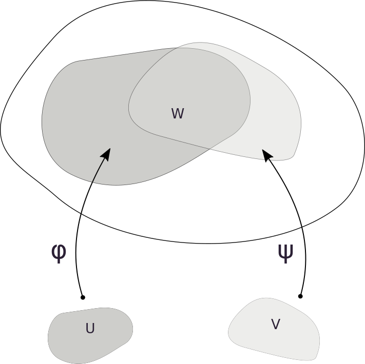
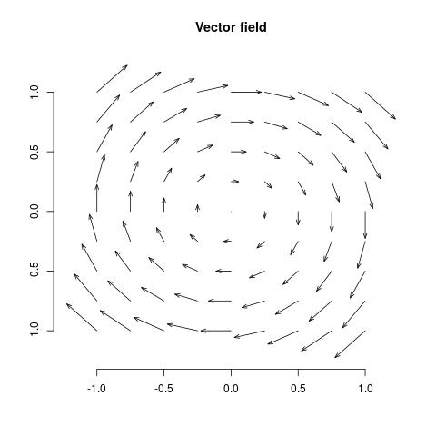
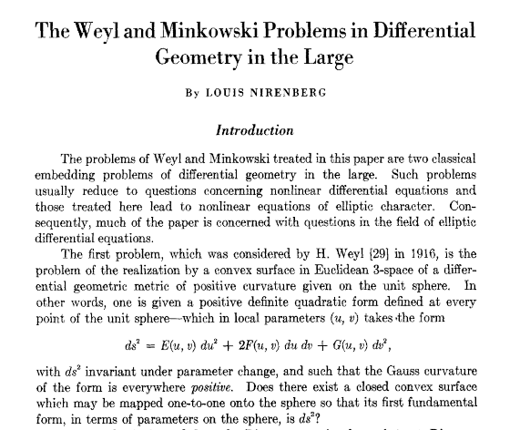

Notes for Introduction to Differential Geometry
Back to DBCh's home
Table of Contents
- 1. Vectors in Euclidean spaces.
- 2. Basic operations with vectors
- 3. Algebraic Properties
- 4. Basis
- 5. Geometric Representation of a vector
- 6. Inner product
- 7. Geometric properties of the Inner product
- 8. The norm of a vector
- 9. The cross product
- 10. The Cross product in physics notation
- 11. Geometric properties of the cross product
- 12. Geometric interpretation of the triple vector product
- 13. Binet-Cauchy's Identity
- 14. Distance
- 15. Parameterised Curves
- 16. Curves in \(\mathbb{R}^3\)
- 17. Velocity vector
- 18. Tangent Vectors and Dot and cross product
- 19. Regular curves
- 20. Arc-length of a curve
- 21. Arc-length function is differentiable
- 22. Fundamental Theorem of calculus
- 23. Unit speed curves
- 24. Reparameterisations
- 25. Arch-length reparameterisations
- 26. Examples.
- 27. The Local theory of Curves
- 28. The Isoperimetric Inequality in \(\mathbb{R}^n\).
- 29. Topology of \(\mathbb{R}^n\)
- 30. Regular Surfaces in \(\mathbb{R}^3\)
- 31. What is a differentiable Manifold?
- 32. Toolkit for Surfaces in \(\mathbb{R}^3\)
- 32.1. The Tangent space
- 32.2. The unit normal vector
- 32.3. The First fundamental Form
- 32.4. Second Fundamental Form
- 32.5. Mean curvature
- 32.6. Gauss curvature
- 32.7. The Gauss map
- 32.8. The Shape operator
- 32.9. The Christoffel symbols.
- 32.10. The curvature endomorphism and the curvature tensor
- 32.11. Ricci curvature tensor
- 32.12. The Scalar curvature
- 32.13. Gauss equation
- 33. Intrinsic Geometry vs Extrinsic Geometry
- 34. Vector and tensor fields
- 34.1. Tensor products
- 34.2. 2-Forms in \(\mathbb{R}^3\).
- 34.3. 2-Forms in a surface
- 34.4. Examples
- 34.4.1. Example 2 in \(\mathbb{R}^2\)
- 34.4.2. Example 3 in \(\mathbb{R}^3\)
- 34.4.3. Vector field on a surface
- 34.4.4. Example of a Vector field in a Surface
- 34.4.5. Example of a 1 form in \(\mathbb{R}^3\)
- 34.4.6. Example of a 1 form in a surface
- 34.4.7. Example of a 2-tensor in \(\mathbb{R}^3\)
- 34.4.8. Example of a 2-tensor in a Surface
- 34.4.9. Example of a 2-from in \(\mathbb{R}^3\)
- 34.4.10. Example of a 2-form in a Surface
- 34.5. Riemannian metric
- 34.6. Riemannian manifold
- 35. Curves on surfaces (manifolds)
- 36. A note before continuing
- 37. Isometries and Conformal maps
- 38. Orientation
- 39. Parallel Transport and Geodesics
- 40. The Gauss Bonnet Theorem
- 40.1. External angle at a vertex
- 40.2. Theorem of turning tangents
- 40.3. Simple regions
- 40.4. Positively oriented curves
- 40.5. Parameterisation compatible with the orientation
- 40.6. Gauss Bonnet Theorem (local)
- 40.7. Gauss curvature and Parallel transport.
- 40.8. Generalisations of Gauss-Bonnet theorem
1 Vectors in Euclidean spaces.
A vector \(\vec{x}\) in \(\mathbb{R}^n\) is defined as an \(n\) - tuple of real numbers \[ \vec{x} = (x_1, x_2, ..., x_n), \quad x_i \in \mathbb{R}, \, i = 1, 2, ..., n. \]
- When \(n=2\) then \(\mathbb{R}^2\) is called a plane.
- When \(n=3\) then \(\mathbb{R}^3\) is called space (or three dimensional space).
- A useful notation is to write \(\mathbf{x}\) to indicate a vector quantity.
2 Basic operations with vectors
Let \(\vec{x} = (x_1, x_2, ..., x_n)\), \(\vec{y} = (y_1, y_2, ..., y_n)\) and \(\alpha\in \mathbb{R}\).
Addition
\begin{equation} \vec{x} + \vec{y} = (x_1 + y_1, x_2 + y_2, ..., x_n + y_n). \end{equation}Multiplication by a scalar
\begin{equation} \alpha\vec{x} = (\alpha x_1, \alpha x_2 , ..., \alpha x_n). \end{equation}3 Algebraic Properties
Let \(\vec{x}, \vec{y}\) and \(\vec{z}\) vectors and \(\alpha,\beta\in \mathbb{R}\). The the following identities hold
- \(\vec{x} + \vec{y} = \vec{y}+ \vec{x}\) (Sum is commutative)
- \((\vec{x} + \vec{y}) + \vec{z} = \vec{x} + ( \vec{y} + \vec{z})\) (Sum is associative)
- \(\vec{x} + \vec{0} = \vec{x}\) (The zero vector)
- \(\vec{x} + (- \vec{x}) = \vec{0}\) (The inverse additive vector)
- \(\alpha(\beta \vec{x}) = (\alpha\beta)\vec{x}\) (Product by scalar is associative)
- \(\alpha(\vec{x} + \vec{y}) = \alpha\vec{x} + \alpha\vec{y}\) (Product by scalar distributes with the vector adition)
- \((\alpha + \beta)\vec{x} = \alpha\vec{x} + \beta\vec{x}\) (Product by scalar distributes with the scalar addition)
4 Basis
Getting familiar with the vector operations, one realises that any vector can be written as:
\begin{equation} \begin{split} \vec{a} = (a_1, a_2, a_3) & = (a_1, 0, 0) + (0, a_2, 0) + (0, 0, a_3) \\ & = a_1(1, 0, 0) + a_2(0, 1, 0) + a_3(0, 0, 1) \\ & = a_1\mathbf{e}_1 + a_2\mathbf{e}_2 + a_3\mathbf{e}_3 \end{split} \end{equation}Remark. It is also common to use the notation \(\mathbf{i},\mathbf{j}, \mathbf{k}\) or \(\hat{i},\hat{j}, \hat{k}\) for these vectors and they are usually referred as standard basis.
5 Geometric Representation of a vector
6 Inner product
Let \(\vec{x} = (x_1, x_2, ..., x_n)\), \(\vec{y} = (y_1, y_2, ..., y_n)\) any two vectors.
The inner product
\begin{equation} \langle \vec{x},\vec{y} \rangle = x_1y_1 + x_2y_2 + \cdots + x_ny_n = \sum_{i=1}^{n} x_i y_i. \end{equation}Remark. This is also called dot product and denoted by \(\vec{x}\cdot \vec{y}\).
7 Geometric properties of the Inner product
Note that for any \(\vec{a}= (a_1, a_2, \ldots, a_n)\in\mathbb{R}^n\) we have
\begin{equation} a_i = \langle \vec{a}, \mathbf{e}_i \rangle = |\vec{a}|\cos(\varphi_i), \end{equation}where \(\varphi_i\) is the angle between \(\vec{a}\) and \(\mathbf{e}_i\).
Then the inner product between two vectors \(\vec{x}, \vec{y}\in \mathbb{R}^n\) can also be defined as
\begin{equation} \langle \vec{x} , \vec{y}\rangle = |\vec{x}|\, |\vec{y}| \cos(\theta), \end{equation}where $θ is the smallest angle between \(\vec{x}, \vec{y}\) lying on the plane generated by the points \(\vec{0},\vec{x},\vec{y}\). (see later how to obtain the equation of the plane).
8 The norm of a vector
Given \(\vec{x} \in \mathbb{R}^n\) the length or norm of the vector is denoted by
\begin{equation} \,|\vec{x}| = \sqrt{\langle \vec{x}, \vec{x}\rangle} = \sqrt{x_1^2 + x_2^2 + \cdots + x_n^2} \end{equation}9 The cross product
Let \(\vec{x} = (x_1, x_2, x_3)\), \(\vec{y} = (y_1, y_2, y_{3})\) any two vectors in \(\mathbb{R}^{3}\).
The cross product
The vector \(\vec{x}\times \vec{y}\in \mathbb{R}^{3}\) is called the cross product of \(\vec{x}\) and \(\vec{y}\) (in that order) if the following identity holds for any other vector \(\vec{w}\in \mathbb{R}^3\):
\begin{equation} \vec{x} \times \vec{y} \cdot \vec{w} = \left| \begin{array}{ccc} x_{1} & x_2 & x_3\\ y_{1} & y_2 & y_3\\ w_{1} & w_2 & w_3 \end{array} \right| \end{equation}Remark. This is also called wedge product and denoted by \(\vec{x}\wedge \vec{y}\). Also from this definition and properties of determinants it is easy to see that
\begin{equation} \vec{x} \times \vec{y} = - \vec{y} \times \vec{x}. \end{equation}10 The Cross product in physics notation
11 Geometric properties of the cross product
The norm of the cross product is the area of the parallelogram spanned by the vectors.
\begin{equation} \,|\vec{x}\times\vec{y}| = |\vec{x}| \, |\vec{y}| \sin(\theta). \end{equation}The cross product is orthogonal (perpendicular) to the plane spanned by the vectors.
12 Geometric interpretation of the triple vector product
The triple vector product in \(\mathbb{R}^3\)
\begin{equation} \,|\vec{x}\times\vec{y}\cdot \vec{w} | \end{equation}is the volume of the parallelepiped spanned by the three vectors
13 Binet-Cauchy's Identity
A very useful identity is the following
\begin{equation} (\vec{x} \times \vec{y} ) \cdot (\vec{w} \times \vec{z}) = \left| \begin{array}{cc} \vec{x}\cdot\vec{w} & \vec{x}\cdot \vec{z}\\ \vec{y}\cdot\vec{w} & \vec{y}\cdot \vec{z}\\ \end{array} \right| = (\vec{x}\cdot\vec{w}) ( \vec{y}\cdot \vec{z}) - (\vec{x}\cdot \vec{z})(\vec{y}\cdot\vec{w}). \end{equation}As an application, we see that the norm of the vector \(\vec{\nu} = \vec{x}_1 \times \vec{x}_2\) can be written in terms of the inner product as
\begin{equation} \, |\vec{\nu}|^2 =\left| \begin{array}{cc} \langle \vec{x}_1,\vec{x}_1\rangle & \langle \vec{x}_1,\vec{x}_2\rangle \\ \langle \vec{x}_2,\vec{x}_1\rangle & \langle \vec{x}_2,\vec{x}_2\rangle \\ \end{array} \right| \end{equation}14 Distance
The inner product allows us to define a norm (length) of vectors. We compute the distance between two vectors \(\vec{x},\vec{y}\in\mathbb{R}^n\) as the real number:
\begin{equation} d(\vec{x}, \vec{y}) = | \vec{x} - \vec{y} | = \sqrt{ (x_1 - y_1)^2 + \cdots + (x_n - y_n)^2}. \end{equation}15 Parameterised Curves
Parametrization, also spelled parameterization, parametrisation or parameterisation, is the process of defining or choosing parameters.
A parameterised differentiable curve is a differentiable map \(\alpha: I \to \mathbb{R}^n\) of an open interval \(I = (a,b)\) of the real line into \(\mathbb{R}^n\).
Remarks.
We use the term differentiable function as smooth function, i.e., a function that has at all points derivatives of all orders (and continuous). In other case, we would explicitly write that the curve is of class \(C^k(I)\) if the function has at all points derivatives up to order \(k\) which are also continuous.
16 Curves in \(\mathbb{R}^3\)
In the case \(n = 3\), any curve \(\alpha\) is defined by three real functions: \[ \alpha(t) = \left(x(t), y(t), z(t) \right). \] The variable \(t\) is called the parameter of the curve.
The interval \(I\) could also be the real line \(\mathbb{R}\).
The trace of the curve is the image \(\alpha(I) \subset \mathbb{R}^3\).
17 Velocity vector
To denote the derivative of the map \(\alpha\) with respect to the parameter \(t\) at any \(t_0\in I\), we may use one of the several available notations:
- \(\left.\dfrac{d\alpha}{dt}\right|_{t=t_0}\).
- \(\alpha'(t_0)\)
- \(\dot\alpha(t_0)\).
and we have
\[ \alpha'(t) = (x'(t), y'(t), z'(t)) . \]
This is called the velocity vector or the tangent vector of the curve \(\alpha\) at \(t\).
18 Tangent Vectors and Dot and cross product
If \(\alpha,\beta:I\to \mathbb{R}^3\) are two differentiable curves, then \(\alpha(t) \cdot \beta(t)\) is a differentiable function and \[\frac{d}{dt} \left( \alpha(t)\cdot \beta(t) \right) = \alpha'(t)\cdot \beta(t) + \alpha(t)\cdot \beta'(t). \]
If \(\alpha,\beta:I\to \mathbb{R}^3\) are two differentiable curves, then \(\alpha(t) \times \beta(t)\) is a differentiable map and \[\frac{d}{dt} \left( \alpha(t)\times \beta(t) \right) = \alpha'(t)\times \beta(t) + \alpha(t)\times \beta'(t). \]
19 Regular curves
Let \(\alpha:I \to \mathbb{R}^3\) be a parameterised differentiable curve.
- A singular point of \(\alpha\) is any \(t\in I\) such that \(\alpha'(t) = 0\).
- If \(\alpha'(t) \neq 0\) for every \(t\in I\), then we say that \(\alpha\) is a regular curve.
Let \(\alpha : I\to \mathbb{R}^3\) be a parameterised regular curve. Show that \(|\alpha(t)|\) is a non-zero constant if and only if \(\alpha(t)\) is orthogonal to \(\alpha'(t)\) for all \(t\in I\).
It follows easily from last proposition and \[ 0 < c^2 = |\alpha|^2 \Leftrightarrow 0 = \frac{d}{dt} |\alpha(t)|^2 = 2 \alpha(t)\cdot \alpha'(t) \Leftrightarrow \alpha(t) \perp \alpha'(t).\]
20 Arc-length of a curve
Given \(t \in I\), the arc-length of a regular parameterised curve \(\alpha: I \to \mathbb{R}^3\) from the point \(t_0\) is \[ s(t) = \int_{t_0}^{t} |\alpha'(r)| dr. \]
If the parameter \(t\) of a curve \(\alpha\) is already the arc-length measured from some point, we say that \(\alpha\) is parameterised by arc length and in this case we usually write \(\alpha(s)\).
21 Arc-length function is differentiable
The arc-length \(s(t)\) is a differentiable function. If in addition the curve \(\alpha\) is regular, i.e., \(\alpha'(t) \neq 0\) for all \(t \in I\), it also holds that \(s'(t) >0\), hence \(s(t)\) has a continuous inverse \(s^{-1}(r)\).
22 Fundamental Theorem of calculus
Recall the following. First Fundamental theorem of Calculus. Let \(f\) be a continuous real-valued function defined on a closed interval \([a, b]\). Let \(F\) be the function defined, for all \(x \in [a, b]\), by \[ F(x)=\int _{a}^{x}\!f(t)\,dt.\] Then \(F\) is uniformly continuous on \([a, b]\) and differentiable on the open interval \((a, b)\), and \[ F'(x)=f(x)\,, \mbox{for all } x \in (a, b). \]
For \([t_0,t]\subset I\), the map \(\alpha: [t_0,t] \to \mathbb{R}^3\) is smooth (differentiable) which implies that \(\alpha': [t_0,t] \to \mathbb{R}^3\) is continuous. Since \(|\cdot|:\mathbb{R}^3 \to \mathbb{R}\) is also continuous, the composition \(t \to |\alpha'(t)|\) is also continuous. Then by the Fundamental Theorem of Calculus, \(s(t)\) is differentiable. For the second part, note that since \(\alpha'(t) \neq 0\) we have \[ \frac{ds(t)}{dt} = |\alpha'(t)| >0 .\] Finally recall that any a continuous (differentiable) strictly monotone function defined on an interval has an inverse which is also a continuous (differentiable) function.
23 Unit speed curves
The curve \(\alpha\) is parameterised by arc-length if and only if its velocity vector has constant length equal to 1.
(\(\Rightarrow\)) If the parameter \(t = s(t)\), then we have (form the proof the previous proposition) \[ 1 = \frac{ds}{dt} = |\alpha'(t)|. \] (\(\Leftarrow\)) Assuming that \(|\alpha'(t)| =1\) for all \(t \in I\), it follows that \[ s(t) = \int_{t_0}^{t}|\alpha'(r)|dr = \int_{t_0}^{t}dr = t - t_0,\] then \(t\) is the arc-length of \(\alpha\) measured from some point.
24 Reparameterisations
Let \(\alpha : I \to \mathbb{R}^3\) be a parameterised curve. We call the curve \(\beta : J \to \mathbb{R}^3\) a reparameterisation of \(\alpha\), is there is a differentiable bijective function \(u: J\to I\) with inverse \(u^{-1}:I\to J\) also differentiable and \[ \beta (r) = (\alpha \circ u) (r), \mbox{ for all }\, r\in J. \]
25 Arch-length reparameterisations
Given a regular parameterised curve \(\alpha : I \to \mathbb{R}^3\), it is possible to obtain a curve \(\beta : J \to \mathbb{R}^3\) parameterised by arc-length which has the same trace as \(\alpha\).
Let \(s(t) = \int_{t_0}^{t} |\alpha'(r)|dr\), with \(t_0,t\in I\). Since \(\alpha\) is regular we already noticed that \(\frac{ds}{dt} = |\alpha'(t)| >0\) and then the function \(s(t)\) has a differentiable inverse \(g(s)\), where \(s\in s(I) = J\). Moreover from the chain rule we have \[ t = g(s(t)) \Rightarrow 1 = \frac{d g(s)}{ds} \frac{ds(t)}{dt} = \frac{d g(s)}{ds} |\alpha'(t)|.\]
Now, set \(\beta(s) = (\alpha \circ g) (s)\). Since clearly \(\beta(J) = \alpha(I)\), they have the same trace. Note now that by the chain rule \[ \left|\beta'(s)\right| = \left|\frac{d\beta (s)}{ds} \right| = \left| \frac{d\alpha (g(s))}{dt} \frac{d g(s)}{ds} \right| = \left| \frac{d\alpha (t)}{dt}\right|\, \left| \frac{dg(s)}{ds} \right| = \left|\alpha'(t)\right| \frac{1}{|\alpha'(t)|} = 1. \] Then, from the previous proposition, \(\beta\) is parameterised by arc-length.
Remark The curve \(\beta\) constructed in the last proposition is called an arc-length re-parameterisation of \(\alpha\) by arc-length, or equivalently, a unit speed reparametersiation.
Given a curve \(\alpha\) parameterised by arc-length \(s\in (a,b)\), the curve \(\beta\) defined in the interval \((-b, -a)\), \(\beta(-s) = \alpha(s)\) is said to be a change of orientation of \(\alpha\).
26 Examples.
- Find the trace and the tangent vectors of the following curves
- \(\alpha(t) = (a \cos t, a \sin t, b\,t)\).
- \(\alpha(t) = ( t^3, t^2)\).
- \(\alpha(t) = (t^3 -4t, t^2 -4)\).
- \(\alpha(t) = (t, |t|)\).
- \(\alpha(t) = (\cos t, \sin t)\).
- \(\alpha(t) = (\cos 2t, \sin 2t)\).
- Find the arc-length parameterisation of the following curves if possible:
- \(\alpha(t) = (\cos 2t, \sin 2t)\), for \(0 < t < 2\pi\)
- \(\alpha(t) = (t, t^2, t^3)\), for \(-\infty < t < \infty\).
27 The Local theory of Curves
Let \(\alpha : I \to \mathbb{R}^3\) be a curve parameterised by arc-length. The curvature of \(\alpha\) at \(s\) is defined by \[ \kappa(s) = |\alpha''(s)| . \]
Note that if \(\alpha(s) = As + B\), with \(A,B\in \mathbb{R}^3\) fixed vectors, and \(|A|=1\). Then \(\kappa(s) = 0\).
If we start by assuming that \(\kappa(s) = 0\), then \(\alpha''(s) = 0\) for all \(s\in I\). Then by integrating each of the coordinate functions, and after reparamaterising by arch length if necessary, one can write \(\alpha(s) = As + B\).
This makes sense with our intuition that a straight line has no curvature.
Notice that when \(\alpha\) is parameterised by arc-length, the length of the tangent vector \(|\alpha'(s)|=1\) remains constant. The curvature then measures the rate of change of the angle between tangent vectors at each point on the curve \(\alpha(s)\).
For \(\alpha(s)\), the vector \(\alpha''(s)\) and the curvature \(\kappa(s)\) remain invariant (unchanged) under a change of orientation.
Let \(\beta(-s) = \alpha(s)\) a change of orientation. Put \(r = -s\), then \(ds/dr = -1\), and hence by the chain rule \[ \frac{d\beta(r)}{dr} = \frac{d\alpha(s)}{dr} = \frac{d\alpha}{ds}\frac{ds}{dr} = -\frac{d\alpha}{ds}. \] Differentiating a second time we get
\[ \beta''(r) = \frac{d^2\beta(r)}{dr^2} = -\frac{d}{dr}\frac{d\alpha}{ds} = -\frac{d^2\alpha}{ds^2} \frac{ds}{dr} = \frac{d^2\alpha}{ds^2} = \alpha''(s), \] as we wished to show.
Important In what follows it will be essential to assume that the curves we will be working with are parameterised by arc-length, regular and such that \(\alpha'(s)\) have no singular points (\(\alpha''(s)\neq 0\)).
At points where \(\kappa(s) \neq 0\), we define the following unit vectors
- The tangent vector at s: \(T(s) = \alpha'(s)\).
- The (principal) normal vector at s: \(N(s) = \frac{1}{\kappa(s)} \alpha''(s)\)
- The binormal vector at s: \(B(s) = T(s) \times N(s)\).
For a curve \(\alpha(s)\) there is a function \(\tau(s)\) called the torsion of \(\alpha\) at \(s\), such that
- \(T'(s) = \kappa(s) N(s)\).
- \(N'(s) = -\kappa(s) T(s) - \tau(s) B(s)\).
- \(B'(s) = \tau(s) N(s)\) .
This are called the Frenet's equations.
The evaluation at \(s\) will be written when necessary.
We have \(T' = \kappa\,N\) holds by definition.
Note that \(B = T \times N\) is also a unit vector. Then \(B' \perp B\). By properties of the cross product \[ B' = T' \times N + T \times N' = T \times N',\] where the first term vanishes because \(T'\) and \(N\) are linearly dependent.
From the last identity we can say that \(B'\) is perpendicular to \(T\), moreover, \(B'\) must be a multiple of \(N\). Then at each point we can write \[ B'(s) = \tau(s) N(s). \]
Since at each value of the parameter \(s\) we have the basis \(\{ T, N, B\}\), we can write \(N = B \times T\) and it follows \[ N' = B' \times T + B \times T' = \tau\, N \times T + B \times \kappa \, N = - \tau \, B - \kappa\, T \]
Given differentiable functions \(\kappa(s)>0\) and \(\tau(s)\) defined in an open interval \(s\in I\), there exists a regular parameterised curve \(\alpha : I\to \mathbb{R}^3\) such that
- \(s\) is the arch length of \(\alpha\).
- \(\kappa(s)\) is the curvature.
- \(\tau(s)\) is the torsion.
Additionally, if \(\bar{\alpha}\) is another curve satisfying the same conditions, then it differs from \(\alpha\) by a rigid motion, i.e. there is an orthogonal linear map \(A:\mathbb{R}^3 \to \mathbb{R}^3\) with positive determinant, and a vector \(C\in \mathbb{R}^3\) such that \[\bar{\alpha} = A\alpha + C \]
Proof of Existence.
Note first that the Frenet's equations define a system of differential equations in \(I\times \mathbb{R}^9\). By letting \(T = (x_1,x_2,x_3),N = (x_4,x_5,x_6),B = (x_7,x_8,x_9)\) and linear functions \(f_i = f_i(s,x_1,\ldots, x_9)\) in \(x_i's\) with coefficients depending on \(s\). \[ \left\{ \begin{array}{ccc} \frac{dx_1}{ds} & = & f_1(s,x_1,\ldots,x_9)\\ \vdots & \vdots & \vdots \\ \frac{dx_9}{ds} & = & f_9(s,x_1,\ldots,x_9) \end{array} \right. \]
A theorem of existence and uniqueness holds in the following form. Given initial conditions \(s_0\in I\), \(x_{1_0}, \ldots x_{9_0}\), there exists an open interval \(J\subset I\) containing \(s_0\), and a unique differentiable map \(\varphi : J \to \mathbb{R}^9\) with \[ \varphi(s_0) = (x_{1_0}, \ldots x_{9_0}), \quad \mbox{and} \quad \varphi'(s) = (f_1,\ldots f_9), \] where the \(f_i's\) are defined in \((s,\varphi(s)) \in J \times \mathbb{R}^9\). And moreover, for linear systems \(J = I\).
In other words, applying the theorem of existence and uniqueness for linear systems of linear equations we can prove that given a positively oriented set of orthonornal vectors \(\{T_0,N_0,B_0\}\) in \(\mathbb{R}^3\) and a value \(s_0\in I\), there is a family of vectors \(\{ T(s) , N(s), B(s) \}\), \(s\in I\) with \(T(s_0) = T_0, N(s_0) = N_0, B(s_0) = B_0\).
The family thus obtained \(\{T(s), N(s), B(s) \}\) remains orthonormal for every \(s\in I\). To show this we use again the Frenet's equations in combination with the inner product. For more clarity we write \(A\cdot B = \langle A, B \rangle\).
\begin{array}{rcl} \frac{d}{ds}\langle T,N\rangle & = & \kappa \langle N, N \rangle - \kappa \langle T, T \rangle - \tau \langle T, B\rangle\\ \frac{d}{ds}\langle T,B\rangle & = & \kappa \langle N, B \rangle + \tau \langle T, N\rangle\\ \frac{d}{ds}\langle N,B\rangle & = & -\kappa \langle T, B \rangle - \tau \langle B, B \rangle + \tau \langle N, N\rangle\\ \frac{d}{ds}\langle T,T\rangle & = & 2\kappa \langle T, N \rangle \\ \frac{d}{ds}\langle N,N\rangle & = & -2\kappa \langle N, T \rangle - 2 \tau \langle N, B\rangle\\ \frac{d}{ds}\langle B,B\rangle & = & 2 \tau \langle B, N\rangle \end{array}One can check that a solution of the above system of equation is
\begin{equation} \begin{split} y_1 = \langle T, N \rangle \equiv 0, \quad y_1 (s_0)= 0\\ y_2 = \langle T, B \rangle \equiv 0, \quad y_2 (s_0)= 0 \\ y_3 = \langle N, B \rangle \equiv 0, \quad y_3 (s_0)= 0 \\ y_4 = \langle T, T \rangle \equiv 1, \quad y_4 (s_0)= 1 \\ y_5 = \langle N, N \rangle \equiv 1, \quad y_5 (s_0)= 1 \\ y_6 = \langle B, B \rangle \equiv 1, \quad y_6 (s_0)= 1 \end{split} \end{equation}Then by the uniqueness part we conclude that the set \(\{ T(s), N(s), B(s) \}\) remains orthonormal for every \(s\in I\).
Now, integrating each component of the vector \(T(s)\) we define the curve \[ \alpha(s) = \int T(r) dr. \]
Now, \(\alpha'(s) = T(s)\), and since \(T\) is a unit vector, \(\alpha\) is a unit speed curve and \(s\) is its arc-length. By Frenet's equations, \(T' = \kappa N\), and since \(N\) is a unit vector, \(\kappa\) is the curvature of \(\alpha\), and \(N\) is its principal normal. Since \(B\) is a unit normal perpendicular to \(T\) and \(N\), there is a smooth function \(c(s)\) such that \(B = c T\times N\), and hence \(c(s)\) must be \(1\) or \(-1\) for all \(s\). Using the initial values condition we conclude that \(c(s) = 1\) for all \(s\). Then \(B\) is the binormal of \(\alpha\) and \(\tau\) its torsion.
Proof of uniqueness.
First recall that a linear transfomration \(A: \mathbb{R}^3 \to \mathbb{R}^3\) is called orthogonal if it preserves the inner product: \[ \langle Ax, Ay \rangle = \langle x, y \rangle,\quad x,y\in\mathbb{R}^3. \] And the corresponding matrix is such that \(\det(A) = \pm 1\).
Now we show that the arc-length, the curvature and the torsion are invariant under rigid motions. Let \(\alpha:I\to\mathbb{R}^3\) be a differentiable curve and \(M(x) = Ax + C\) a rigid motion. Then \(M \circ \alpha : I \to \mathbb{R}^3\) defines another curve, \(\bar{\alpha} (t) = A\alpha(t) + C\). Then \[ \bar{\alpha}'(t) = A\alpha'(t), \] and since it preserves inner product we have \[ |\bar{\alpha}'(t)|^2 = \langle \bar{\alpha}'(t), \bar{\alpha}'(t) \rangle = \langle A\alpha'(t), A\alpha'(t)\rangle = \langle \alpha'(t) , \alpha'(t) \rangle = |\alpha'(t)|^2. \] From the last observation we can verify that the arc-length is invariant under rigid transformations: \[ s(t) = \int_{t_0}^{t} |\alpha'(r)| dr = \int_{t_0}^{t} |\bar{\alpha}'(r)| dr. \] Then if \(\alpha\) is parameterised by arc-length, so is \(\bar{\alpha}\). Now, \(\alpha'' = \kappa N\), and under the rigid motion we have \(\bar{\alpha}'' = A\alpha''\). \[ \kappa^2 = \langle \alpha'',\alpha''\rangle = \langle A\alpha'',A\alpha''\rangle, \] which implies that the curvature \(\kappa\) is invariant under rigid motions. Similar argument shows that the torsion \(\tau\) is also invariant under rigid motions.
Suppose now that there are two curves \(\alpha\) and \(\bar{\alpha}\) such that for \(s\in I\):
\begin{equation*} \begin{split} \kappa(s)& =& \bar{\kappa}(s)\\ \tau(s)& =& \bar{\tau}(s)\\ \end{split} \end{equation*}Lets choose an initial condition. For \(s_0\in I\) let \(T_0,N_0,B_0\) the Frenet trihedron of the curve at \(\alpha(s_0)\) and \(\bar{T}_0,\bar{N}_0,\bar{B}_0\) the corresponding trihedron at \(\bar{\alpha}(s_0)\). By a proper translation and rotation, we can assume \(\alpha(s_0) = \bar{\alpha}(s_0), T_0 = \bar{T}_0, N_0 = \bar{N}_0\) and \(B_0 = \bar{B}_0\). Each curve satisfies the Frenet's equations, then we have the following differential equaitons
\begin{equation*} \begin{array}{ll} T'(s) = \kappa(s) N(s). & \bar{T}'(s) = \bar{\kappa}(s) \bar{N}(s).\\ N'(s) = -\kappa(s) T(s) - \tau(s) B(s). & \bar{N}'(s) = -\bar{\kappa}(s) \bar{T}(s) - \bar{\tau}(s) \bar{B}(s).\\ B'(s) = \tau(s) N(s) . & \bar{B}'(s) = \bar{\tau}(s) \bar{N}(s) . \end{array} \end{equation*}Remember that we have set the initial conditions \(\alpha(s_0) = \bar{\alpha}(s_0), T_0 = \bar{T}_0, N_0 = \bar{N}_0\) and \(B_0 = \bar{B}_0\). Now, we want to show that \(|T(s) - \bar{T}(s)|\) vanishes for all \(s\in I\), and similar for \(|N(s) - \bar{N}(s)|\) and \(|B(s) - \bar{B}(s)|\). Note that
\begin{align*} \frac{1}{2}\frac{d}{ds} |T(s) - \bar{T}(s)|^2 & = \frac{1}{2}\frac{d}{ds} \langle T(s) - \bar{T}(s), T(s) - \bar{T}(s) \rangle \\ & = \langle T(s) - \bar{T}(s), T'(s) - \bar{T}'(s) \rangle \\ & = \kappa(s) \langle T(s) - \bar{T}(s), N(s) - \bar{N}(s) \rangle. \end{align*}In a similar way one shows that
\begin{align*} \frac{1}{2}\frac{d}{ds} |B(s) - \bar{B}(s)|^2 &= \tau(s) \langle B(s) - \bar{B}(s), N(s) - \bar{N}(s) \rangle, \\ \frac{1}{2}\frac{d}{ds} |N(s) - \bar{N}(s)|^2 &= -\kappa(s) \langle N(s) - \bar{N}(s), T(s) - \bar{T}(s) \rangle -\tau(s) \langle N(s) - \bar{N}(s), B(s) - \bar{B}(s) \rangle. \end{align*}Then the remarkable observation is that for any \(s\in I\) \[ \frac{1}{2}\frac{d}{ds}\left[ |T(s) - \bar{T}(s)|^2 + |B(s) - \bar{B}(s)|^2 + |N(s) - \bar{N}(s)|^2 \right] = 0, \] then the quantity is the constant \(0\). This shows that \(T(s) = \bar{T}(s), N(s) = \bar{N}(s)\) and \(B(s) = \bar{B}(s)\). Finally form \[ \frac{d}{ds} \alpha(s) = T(s) = \bar{T}(s) = \frac{d}{ds} \bar{\alpha}(s), \] it also follows that \((\alpha - \bar{\alpha})' \equiv 0\). Then \(\alpha(s) = \bar{\alpha}(s) + c\), for a constant vector \(c\in \mathbb{R}^3\). Bus since form our initial conditions we are assuming \(\alpha(s_0) = \bar{\alpha}(s_0)\) then \(c=0\) and we conclude \(\alpha(s) = \bar{\alpha}(s)\) for all \(s\in I\).
Let \(\alpha: I \to \mathbb{R}^3\) be a regular parameterised curve not necessarily by arc-length. Let \(s(t)\) the arc-length and denote by \(t = t(s)\) be the inverse of the function \(s\). Then
- Show that \[\frac{dt}{ds} = \frac{1}{|\alpha'|},\] and \[\frac{d^2t}{ds^2} = - \frac{\alpha'\cdot \alpha''}{|\alpha'|^4} \]
- The curvature of \(\alpha\) at \(t\in I\) is \[ \kappa(t) = \frac{|\alpha' \times \alpha''|}{|\alpha'|^3}. \]
- The torsion of \(\alpha\) at \(t \in I\) is \[ \tau(t) = -\frac{(\alpha' \times \alpha'')\cdot \alpha'''}{|\alpha' \times \alpha ''|^2} \]
The solution is left as an exercise. As a hint, here some of the identities that you may find on the way.
\begin{equation} \begin{split} T &= \alpha' \frac{dt}{ds} = \frac{\alpha'}{|\alpha'|}\\ \frac{dT}{ds}&=\frac{\alpha''}{|\alpha'|^2} - \alpha' \frac{\alpha'\cdot\alpha''}{|\alpha'|^4}\\ \frac{d^2T}{ds^2}&= \frac{\alpha'''}{|\alpha|^3} - 3\alpha''\frac{\alpha'\cdot\alpha''}{|\alpha|^5} + \alpha'\frac{d^3t}{ds^3}. \end{split} \end{equation} \begin{equation} T = \frac{\alpha'}{|\alpha'|}, \quad N = \frac{1}{k}T' , \quad B = T\times N \end{equation}Remark We were mainly studying curves in \(\mathbb{R}^3\) where the curvature was defined as a positive number \(\kappa >0\). In the case of curves on the plane \(\mathbb{R}^2\), it is possible to give a slightly different definition of curvature, where there is a sign associated to it. This is done by observing that, if a curve \(\alpha : I \to \mathbb{R}^2\) is parameterised by arc-length, and \(T = \alpha'(s)\), is the tangent vector, then there are only two possible unit vectors perpendicular to \(T\). One can then define the sign of the normal to be positive if \(N\) is obtained by rotating the tangen vector \(T\) anti-clockwise by \(\pi/2\).
27.1 Global Theory of Curves
Now we will study some global properties of Curves. Two classic results are: the isoperimetric inequality and the Four Vertex Problem.
In this course we will only focus on the former one. We will state the problem with curves and in the next section we will generalise the questions to higher dimensions.
27.2 The Isoperimetric Inequality
Let \(C\) be a simple closed curve in \(\mathbb{R}^2\) with length \(L\), and let \(A\) be the area of the region bounded by \(C\). Then we have \[ L^2 - 4\pi A \geq 0,\] and the equaltiy holds if and only if \(C\) is a circle.
28 The Isoperimetric Inequality in \(\mathbb{R}^n\).
The proof that we will give is due to X. Cabré which involves the solution of a particular Partial Differential Equation to obtain the result.
29 Topology of \(\mathbb{R}^n\)
An open ball of radius \(r>0\), centered at \(\vec{p}\in \mathbb{R}^n\) is the set
\begin{equation} B_{r}(\vec{p}) = \left\{ \vec{x}\in \mathbb{R}^n \, | \, |\vec{x} - \vec{p}| < r \right\}. \end{equation}Let \(A\subseteq \mathbb{R}^n\) and \(\vec{p} \in \mathbb{R}^n\). Then one of the following must hold
- There is an open ball \(B_r(\vec{p})\) completely contained in \(A\). In this case \(\vec{p}\) is called interior point of \(A\).
- There is an open ball \(B_r(\vec{p})\) completely contained in \(\mathbb{R}^n\setminus A\) (the complement of \(A\), also denoted by \(A^{c}\)). In this case \(\vec{p}\) is called exterior point of \(A\).
- If \(B\) is any open ball centered at \(\vec{p}\), then \(B\) contains points of both \(A\) and \(\mathbb{R}^n \setminus A\). In this case \(\vec{p}\) is called boundary point of \(A\).
We also have the following terminology:
- The set \(U \subseteq \mathbb{R}^n\) is called open if all its elements are interior points.
- The set \(E \subseteq \mathbb{R}^{n}\) is called closed if its complement \(E^{c} = \mathbb{R}^n\setminus E\) is open.
- The collection of all interior points of a set \(A\subseteq \mathbb{R}^n\) is denoted by \(\mbox{Int}(A)\).
- The collection of all boundary points of a set \(A\subseteq \mathbb{R}^n\) is denoted by \(\partial A\).
- The closure of a set \(A\subseteq \mathbb{R}^n\) is the union \(A \cup \partial A\) and will be denoted by \(\overline{A}\).
- A set \(A\in \mathbb{R}^n\) is called bounded if there is an open ball \(B=B_R(\vec{0})\) (for some \(R>0\)) such that \(A\subseteq B\).
- A set \(K\in \mathbb{R}^n\) is called compact if its both: closed and bounded.
- For any \(\vec{p}\in \mathbb{R}^n\), a neighbourhood of \(p\) is any open set \(U\subseteq \mathbb{R}^n\) such that \(p\in U\).
It is easy to show the following properties:
- The arbitrary union of open sets is open and the finite intersection of open sets is open.
- The arbitrary intersection of closed sets is closed and the finite union of closed sets is closed.
30 Regular Surfaces in \(\mathbb{R}^3\)
In this section we well discuss the definition of a surface in \(\mathbb{R}^3\) and three ways to represent them:
- As a collection of parameterisations or chart coordinates.
- As the graph of a differentiable function.
- As the inverse image of regular points.
A subset \(S\subset \mathbb{R}^3\) is a regular surface if for every \(p\in S\), there exists an open neighbourhood \(V\subset \mathbb{R}^3\) and a map \(X:U\to V\cap S\) of an open set \(U\subset \mathbb{R}^2\) onto \(V\cap S \subset \mathbb{R}^3\) such that
- \(X\) is a smooth mapping, i.e., each coordinate function of \(X\) have continuous partial derivatives of all orders in \(U\).
- \(X\) is an homoeomorphism: \(X\) is a continuous bijection and its inverse \(X^{-1}\) is also continuous.
- For each \(q \in U\), the differential \(dX_{q}:\mathbb{R}^2 \to \mathbb{R}^3\) is injective (one-to-one).
In this case we say that \(X\) is a parameterisation around \(p\in S\), or equivalently, that the pair \((X^{-1}, V\cap S)\) is a coordinate chart around \(p\in S\).
Let \(U\subset \mathbb{R}^2\) be an open set and \(f: U \to \mathbb{R}\) be a smooth function. Then the graph of \(f\), given by
\begin{equation} \mbox{graph}(f) = \left\{ \left(x,y,f(x,y)\right) \, | \, (x,y)\in U \right\}, \end{equation}is a regular surface (in the sense of the definition above).
30.1 The Inverse Function Theorem (IFT)
The following result is known as the Inverse Function Theorem (IFT). It states the existence of a local diffeomorphism between two sets by requiring that the differential of a function between them is represented by a non-singular matrix.
Suppose that \(F:\mathbb{R}^{n} \to \mathbb{R}^{n}\) is continuously differentiable in an open set \(U\) containing the point \(p\). Suppose that \(\det\left(dF_{p}\right) \neq 0\). Then there is an open set \(V\) containing \(p\) and an open set \(W\) containing \(F(p)\) such that \(F: V \to W\) has a continuous inverse \(F^{-1}: W \to V\) which is also differentiable, and such that
\begin{equation} dF^{-1}_{y} = \left( dF_{F^{-1}(y)} \right)^{-1}. \end{equation}The proof will rely on the following lemma:
Let \(A\subseteq \mathbb{R}^n\) be a rectangle and \(f:A\to \mathbb{R}^n\) be a continuously differentiable. If there is a positive constant \(M>0\) such that \(|\frac{\partial f_i(\vec{x})}{\partial x_j}| \leq M\) for all \(\vec{x} \in \mbox{Int(A)}\), then
\begin{equation} \, |f(\vec{x}) - f(\vec{y}) | \leq n^2 M | \vec{x} - \vec{y}|, \quad \mbox{for all}\quad \vec{x},\vec{y} \in A. \end{equation}Note that we can write
\begin{equation} f_i(\vec{x}) - f_i(\vec{y}) = \sum_{j=1}^{n} \left( f_{i}(x_1,\ldots,x_{j},y_{j+1}, \ldots, y_{n}) - f_{i}(x_1,\ldots,x_{j-1},y_{j}, \ldots, y_{n}) \right). \end{equation}Applying to each term the Mean Value theorem, for each \(i,j = 1, 2, \ldots, n\) there exists \(\vec{z}_{ij}\in U\) such that
\begin{equation} \begin{split} \, |f_{i}(x_1,\ldots,x_{j},y_{j+1}, \ldots, y_{n}) - f_{i}(x_1,\ldots,x_{j-1},y_{j}, \ldots, y_{n}) | & \leq | (x_j - y_j)\frac{\partial f_i(\vec{z}_{ij})}{\partial x_j}| \\ & \leq M |x_j - y_j|\\ & \leq M |\vec{x} - \vec{y}|. \end{split} \end{equation}The lemma follows now since
\begin{equation} \, |f(\vec{x}) - f(\vec{y}) | \leq \sum_{i=1}^{n} |f_i(\vec{x}) - f_i(\vec{y}) | \leq n^2 M |\vec{x} - \vec{y}|. \end{equation}(IFT) First we note that we can assume that \(dF_p\) is the identity linear map. If we write \(T = dF_p\), then since \(\mbox{det}(T) \neq 0\), then there exists the inverse \(T^{-1}\). Then by the chain rule:
\begin{equation} D(T^{-1}\circ F)_p = dT^{-1}_{F(p)} \circ dF_{p} = T^{-1} \circ dF_p = (dF_{p})^{-1} \circ dF_{p} = I. \end{equation}Then if the theorem is true for \(f : = T^{-1} \circ F\), then the inverse \(f^{-1} =(T^{-1} \circ F)^{-1}\) exists and is differentiable. By defining \(F^{-1} : = f^{-1} \circ T^{-1}\), we have that the theorem is also true for \(F\). Hence, lets assume \(dF_{p} = I\).
I. There is an open set \(U\) around \(\vec{p}\) such that for all \(\vec{x}\in U\) with \(\vec{x}\neq \vec{p}\) then \(F(\vec{x}) \neq F(\vec{p})\). If this was not the case, we could find a sequence of vectors \(\vec{h}_n\) such that \(\lim_{n\to \infty} \vec{h}_n = \vec{0}\) such that \(F(\vec{p} + \vec{h}_n) = F(\vec{p})\). Then the quotient
\begin{equation} \frac{ |F(\vec{p} + \vec{h}_n ) - F(\vec{p}) - T(\vec{h}_n)|}{|\vec{h}_n|} = \frac{|\vec {h}_n|}{|\vec{h}_n|} = 1. \end{equation}Since on the other hand
\begin{equation} \lim_{\vec{h}\to 0} \frac{| F(\vec{p} + \vec{h} ) - F(\vec{p}) - T(\vec{h})|}{|\vec{h}|} = 0 \end{equation}which is clearly a contradiction.
In the following we are also writing \(F(\vec{x}) = (F_1(\vec{x}), \ldots, F_{n}(\vec{x}))\).
II. In for all \(x \in U\) we have \(\det(dF_x)\neq 0\).
III. Using that the partial derivatives of \(F\) are also continuous we can also assume that for all \(i,j = 1, 2, \ldots n\) it holds
\begin{equation} \, | \frac{\partial F_{i}(\vec{x})}{\partial x_{j}} - \frac{\partial F_{i}(\vec{p})}{\partial x_{j}} | < \frac{1}{2n^2}. \end{equation}IV. Apply the previous lemma to the function \(g(\vec{x}) = F(\vec{x}) - \vec{x}\), and conclude
\begin{equation} \, | \vec{x} - \vec{y} | \leq 2 | F(\vec{x}) - F(\vec{y}) |. \end{equation}V. Note that here exists a positive number \(d>0\) such that for every \(x\in \partial U\) it holds: \(|F(\vec{x}) - F(\vec{p})| \geq d\). Define the set
\begin{equation} W = \left\{ \vec{y}\in \mathbb{R}^n : | \vec{y} - F(\vec{p}) | < \frac{d}{2} \right\}. \end{equation}Then show that for every \(y \in W\) and \(x\in \partial U\) it holds
\begin{equation} \, | y - F(p)| < |y - F(x) |. \end{equation}VI. For any \(\vec{y}\in W\) there is a unique \(x \in U\) such that \(\vec{y} = F(\vec{x})\). For this, for \(\vec{y}\in W\) consider the function \(G_y : \overline{U} \to \mathbb{R}\) given by
\begin{equation} G_y(\vec{x}) = \left| \vec{y} - F(\vec{x})\right|^2. \end{equation}One can verify that the minimum of \(G_y\) should be attained in the interior of \(U\). Then, at the minimum \(x\in U\)
\begin{equation} \frac{\partial G_y(\vec{x})}{\partial x_j} = 2 \sum_{i = 1}^{n} \left( y_i - F_i(\vec{x})\right) \frac{\partial F_i(\vec{x})}{\partial x_j} = 0 \end{equation}and hence conclude that \(\vec{y} = F(\vec{x})\).
VII. Define \(V = U \cap F^{-1}(W)\). Use inequality (IV) and conclude \(F^{-1}\) is continuous.
VIII. Show that \(F^{-1}\) is differentiable in \(V\). To this end, write the Taylor expansion for \(F\) around a point \(\vec{x}\in U\), then
\begin{equation} F(\vec{x}_1) = F(\vec{x}) + \lambda (\vec{x}_1 - \vec{x}) + \varphi(\vec{x}_1 - \vec{x}), \end{equation}where
\begin{equation} \lim_{x_1 \to x} \frac{ |\varphi(\vec{x}_1 - \vec{x})|}{|\vec{x}_1 - \vec{x}|} = 0. \end{equation}Justify that one can write
\begin{equation} F^{-1}(\vec{y}_1) = F^{-1}(\vec{y}) + \lambda^{-1} (\vec{y}_1 - \vec{y}) -\lambda^{-1}\, \varphi(\vec{x}_1 - \vec{x}), \end{equation}Then the claim will follow from the following
\begin{equation} \begin{split} \lim_{ y_1 \to y} \frac{ |\lambda^{-1}\varphi(F^{-1}(\vec{y}_1) - F^{-1}(\vec{y}))|}{|\vec{y}_1 - \vec{y}|} & \leq M\lim_{y_1 \to y} \frac{ |\varphi(F^{-1}(\vec{y}_1) - F^{-1}(\vec{y}))|}{|\vec{y}_1 - \vec{y}|} \\ & = M\lim_{y_1 \to y} \frac{ |\varphi(F^{-1}(\vec{y}_1) - F^{-1}(\vec{y}))|}{|F^{-1}(\vec{y}_1) - F^{-1}(\vec{y})|} \frac{ |F^{-1}(\vec{y}_1) - F^{-1}(\vec{y})|}{|\vec{y}_1 - \vec{y}|} \\ & = 0. \end{split} \end{equation}30.2 The Implicit Function Theorem
Let \(U\subset \mathbb{R}^{n} \times \mathbb{R}^{m}\) be open and let \(F: U \to \mathbb{R}^{m}\) be a continuously differentiable in \(U\). Suppose that at the point \((r_0,s_0)\in U\) we have
\begin{equation} F(r_0, s_0) = 0, \end{equation}and that the matrix
\begin{equation} \left( \frac{\partial F_{i}(r_0,s_0)}{\partial s_{j}} \right)_{i,j = 1,...,m} \end{equation}is not singular (its determinant does not vanish). Then there exists an open neighbourhood \(V\) of \(r_{0}\) in \(\mathbb{R}^{n}\), and an open neighbourhood \(W\) of \(s_0\) in \(\mathbb{R}^{m}\) such that \(V\times W \subset U\), and there exists a smooth map \(g: V \to W\) such that for each \((p,q) \in V\times W\) it holds
\begin{equation} F(p,q) = 0 \mbox{ if and only if } q = g(p). \end{equation}Let \(F: U\subset \mathbb{R}^{n} \to \mathbb{R}^m\). If \(p\in U\) is such that \(dF_{p}:\mathbb{R}^n \to \mathbb{R}^{m}\) if a linear transformation of maximal rank (\(\min(n,m)\)), then \(p\) is called regular point. Otherwise, \(p\) is called singular or critical point. A point \(q \in \mathbb{R}^m\) is called a critical value of \(F\) if its pre-image \(F^{-1}(q)\) contains a critical point. Otherwise \(q\) will be called regular value of \(F\).
If \(F: U\subset \mathbb{R}^{n} \to \mathbb{R}\) is a differentiable function and \(q\in F(U)\) is a regular value of \(F\), then \(F^{-1}(q)\) is a regular hypersurface in \(\mathbb{R}^{n}\). (for the case \(n=3\) the conclusion is that the inverse image of a regular value is a regular surface in \(\mathbb{R}^{3}\)).
Let \(S\subset \mathbb{R}^{3}\). \(S\) is a regular surface if and only if for any point \(p\in S\) there exists an open neighbourhood \(V\in S\) such that \(V\) is the graph of a differentiable function which has one of the following three forms:
\begin{equation} \begin{split} z = f(x,y) & \mbox{ or} \\ y = g(x,z) & \mbox{ or} \\ x = h(y,z) &. \\ \end{split} \end{equation}Let \(\varphi: U \subseteq \mathbb{R}^2 \to S\) be a parameterisation of \(S\) around a point \(p\in S\)
\begin{equation} \varphi(u,v) = \left( x(u,v), y(u,v), z(u,v) \right), \end{equation}with \(p = \varphi(u_0, v_0)\).
By the condition (3) in the definition, we can suppose that
\begin{equation} \left| \begin{array}{cc} \frac{\partial x}{\partial u} & \frac{\partial x}{\partial v} \\ \frac{\partial y}{\partial u} & \frac{\partial y}{\partial v} \\ \end{array} \right| \neq 0. \end{equation}Next, consider the usual projection map \(\pi : \mathbb{R}^3 \to \mathbb{R}^2\), \((x,y,z) \mapsto (x,y)\).
Consider the composition \((\pi \circ \varphi): U \to \mathbb{R}^2\) and apply the IFT. Then there are two open sets \(V_1, V_2 \in \mathbb{R}^2\), such that \(\pi \circ \varphi\) is a diffeomorphism:
\begin{equation} \begin{array}{ll} (\pi \circ \varphi): V_1 \to V_2 & \mbox{is bijective and differentiable}\\ (\pi \circ \varphi)^{-1}: V_2 \to V_1 & \mbox{is also differentiable}. \end{array} \end{equation}In particular \(\pi: W \to \mathbb{R}^2\) is bijective, where \(W = \varphi(V_1) \cap S\), and \(p\in W\). This means that the inverse \(\pi^{-1}:V_1 \to W\) is uniquely determined by
\begin{equation} \pi^{-1}(x,y) = (x, y, f(x,y)). \end{equation}Now consider the composition of \((\pi\circ \varphi)^{-1}: V_2 \to V_1\) together with the map \(z: V_1 \to \mathbb{R}\) given by \((u,v) \mapsto z(u,v)\). Then the composition \(z \circ \varphi^{-1} \circ \pi^{-1}\) shows that
\begin{equation} (x,y)\mapsto (x,y,f(x,y)) \mapsto (u(x,y), v(x,y)) \mapsto z(u(x,y), v(x,y)) = f(x,y). \end{equation}Hence \(W = \mbox{graph}(f)\).
On the other hand if we start with a graph \(\varphi(u,v) = (u, v, f(u,v))\) then
\begin{equation} x(u,v) = u\\ y(u,v) = v\\ z(u,v) = f(u,v)\\ \end{equation}they are all differentiable functions so condition 1 of the definition holds.
Note that the matrix
\begin{equation} d\varphi_{(u,v)} =\left( \begin{array}{cc} 1 & 0\\ 0 & 1\\ \frac{\partial f}{\partial u} & \frac{\partial f}{\partial v}\\ \end{array} \right), \end{equation}has a minor
\begin{equation} \left| \begin{array}{cc} 1 & 0\\ 0 & 1 \end{array} \right| = 1 \neq 0, \end{equation}Hence it \(d\varphi_{(u,v)}\) is of maximal rank, so condition 3 of the definition holds.
To check that the condition 2 holds, note that the projection \(\pi : \mathbb{R}^3 \to \mathbb{R}^2\), given by \(\pi(x,y,z) = (x,y)\) is continuous, an since \(\varphi^{-1} = \pi \circ \varphi\) is the composition of two continuous functions, then \(\varphi^{-1}\) is also continuous. Then \(\varphi\) is an homomorphism.
Let \(p\in S\) be a point of a regular surface \(S\) and let \(X:U\subset \mathbb{R}^2 \to \mathbb{R}^3\) be a map with \(p\in X(U)\) and such that condition 1 and condition 3 of the definition of a regular surface hold. If \(X\) is injective, then \(X^{-1}\) is continuous.
Examples
- The graph of a paraboloid: \(S = \{ (x,y,z) : z = x^2 + y^2 \}\).
- The ellipsoid: \(\frac{x^2}{a^2} + \frac{y^2}{b^2} + \frac{z^2}{b^2} = 1\).
The sphere using the stereographic projection: \(X:V_1 \subset \mathbb{R}^2 \to \mathbb{R}^3\) given by
\begin{equation} X(u,v) = \left( \frac{2u}{ u^2 + v^2 + 1}, \frac{2v}{u^2 + v^2 +1}, \frac{u^2 + v^2 -1}{ u^2 + v^2 +1} \right) \end{equation}
30.3 Change of parameters (charts)
Let \(x\in S\) be any point of a regular surface \(S\subset \mathbb{R}^{3}\). Let \(\varphi: U\subset\mathbb{R}^2 \to S\) and \(\psi: V\subset\mathbb{R}^2 \to S\) two parameterisations around \(x\). Put \(W = \varphi(U) \cap \psi(V)\). Then the change of coordinates \(h = \varphi^{-1}\circ\psi : \psi^{-1}(W) \to \varphi^{-1}(W)\) is a diffeomorphism, that is, \(h\) is differentiable and has an inverse \(h^{-1}\), and the inverse is also differentiable.
Take \(p\in \psi^{-1}(W)\) and put \(q = h(p)\). We write \(\varphi = (x,y,z)\) and \(\psi = (\overline{x},\overline{y},\overline{z})\).
I. Since \(\varphi\) is a parameterisation we can assume that
\begin{equation} \left| \begin{array}{cc} \frac{\partial x}{\partial u}(q) & \frac{\partial x}{\partial v}(q) \\ \frac{\partial y}{\partial u}(q) & \frac{\partial y}{\partial v}(q) \\ \end{array} \right| \neq 0. \end{equation}II. Define an extension of \(\varphi\). Let \(F:U\times \mathbb{R} \to \mathbb{R}^3\)
\begin{equation} F(u,v,t,) = \varphi(x(u,v), y(u,v), z(u,v) + t) = \varphi(u,v) + t\vec{e}_3. \end{equation}One can explicitly write \(dF_{q}\) and verify that \(\det(dF_{p}) \neq 0\), and the restriction of \(F\) to the set \(U\times \{0\}\) agrees with \(\varphi\):
\begin{equation} \left. F \right|_{U\times\{0\}} = \varphi. \end{equation}III. Apply the IFT to \(F\) to conclude that there is a neighbourhood \(W_2 \subset \mathbb{R}^3\), \(\varphi(q) \in W_2\) and a neighbourhood \(U_2 \subset U\times \mathbb{R}\) such taht \(F: U_2 \to W_2\) is a diffeomorphism.
IV. Use the fact that \(\psi\) is an homomorphism, then there is a set \(V_2\subset V\) with \(p\in V_2\) and such that \(\psi(V_2) \subset W_2\).
Now, the restriction of \(h\) to \(V_2\) is such that
\begin{equation} \left. h \right|_{V_2} = \left. \left(F^{-1} \circ \psi\right) \right|_{V_2}. \end{equation}Then \(h\) is differentiable at \(p\in \psi^{-1}(W)\) since it is the composition of two differentiable maps.

31 What is a differentiable Manifold?
Regular smooth surfaces in \(\mathbb{R}^3\) are an important sources of examples when studying more general objects, namely, differentiable manifolds. Here we will state the definition without going deeper into the subject. The main idea is to introduce this formal definition and discuss the similarities with the definition of a regular surface.
A topological space is any set \(X\) together with a collection of subsets of \(X\), \(\tau\), such that
- The empty set and \(X\) itself belong to \(\tau\).
- Any arbitrary (finite or infinite) union of members of \(\tau\) also belongs to \(\tau\).
- The intersection of any finite number of members of \(\tau\) also belongs to \(\tau\).
In topology, a Hausdorff space, is a topological space where for any two distinct points there exist neighbourhoods of each which are disjoint from each other.
A locally Euclidean space \(M\) of dimension \(n\) is a Hausdorff topological space \(M\) for which each point \(p\in M\) has a neighbourhood homoeomorphic to an open subset of the Euclidean space \(\mathbb{R}^n\). The pair \((U, \varphi)\) consisting of a connected open set \(U\subset M\) and the homoeomorphism \(\varphi\) onto an open subset of \(\mathbb{R}^n\) is called chart, or coordinate system.
A differentiable structure \(\mathcal{F}\) of class \(C^{k}\), (\(1\leq k \leq \infty\)) on a locally Euclidean space \(M\) is a collection of coordinate systems \(\{ (U_{\alpha}, \varphi_{\alpha}) \}_{\alpha\in A}\) satisfying the following properties:
- \(\cup_{\alpha \in A}U_{\alpha} = M\).
- \(\varphi_{\alpha} \circ \varphi^{-1}_{\beta}\) is \(C^{k}\) for all \(\alpha,\beta \in A\).
- The collection is maximal with respect to (2): If \((U,\varphi)\) is any other chart such that \(\varphi \circ \varphi^{-1}_{\alpha}\) and \(\varphi_{\alpha} \circ \varphi^{-1}\) are of class \(C^{k}\) for all \(\alpha \in A\), then \((U,\varphi)\in \mathcal{F}\).
An n-dimensional differentiable manifold of class \(C^{k}\) is a pair \((M,\mathcal{F})\) consisting of an n-dimensional, second countable, locally Euclidean space \(M\) together with a differentiable structure \(\mathcal{F}\) of class \(C^{k}\).
Examples
- The Euclidean space \(\mathbb{R}^n\).
- Any finite dimensional real vector space \(V\).
- The n-sphere \(\mathbb{S}^n = \{ \vec{x}\in \mathbb{R}^{n+1} : |\vec{x}|^2 = 1 \}\).
31.1 Tangent Vectors and Tangent Plane
Let \(f: V\subset S \to \mathbb{R}\) be a function defined in an open set \(V\) of a regular surface \(S\), that is, \(V\) is the intersection of an open set of \(\mathbb{R}^3\) with \(S\). We say that \(f\) is differentible at \(p\in V\), if for some parameterisation \(\varphi: U\subset \mathbb{R}^2 \to S\), with \(p \in \varphi(U) \subset V\), the composition \(f \circ \varphi: U \subset \mathbb{R}^2 \to \mathbb{R}\) is differentiable at the point \(\varphi^{-1}(p) \in U\) in the usual sense. We will say that \(f\) is differentiable in \(V\) if it is differentiable at all points of \(V\).
Remark. The previoius definition is independent of the parameterisation.
Let \(f: V_1\subset S_1 \to S_2\) be a function defined in an open set \(V\) of a regular surface \(S_1\), to a regular surface \(S_2\). We say that \(f\) is differentible at \(p\in V_1\), given the parameterisations \(\varphi_1: U_1\subset \mathbb{R}^2 \to S_1\), with \(p \in \varphi_1(U_1) \subset V_1\), and \(\varphi_2: U_2\subset \mathbb{R}^2 \to S_2\), with \(f(p) \in \varphi_2(U_2)\), the composition \(\varphi_2^{-1} \circ f \circ \varphi_1: U_1 \to U_2\) is differentiable at the point \(\varphi^{-1}_1(p) \in U\) in the usual sense. We will say that \(f\) is differentiable in \(V\) if it is differentiable at all points of \(V\).
We say that a mapping between differentiable surfaces \(f :U\subset S_1 \to S_2\) is a local diffeomorphism at \(p\in U\) if there exists an open subsert \(V\subseteq U\) with \(p \in V\) such that the restriction \(\left. f \right|_{V}: V \to f(V)\) is bijective, smooth and its inverse \(\left.f^{-1}\right|_{V} : f(V) \to V\) is also smooth.
Let \(I = (-r,r)\subset \mathbb{R}\), \(r>0\), \(p\in S\) and let \(\alpha: I\to S\subset\mathbb{R}^{3}\) be differentiable such that \(\alpha(0) = p\). Then the vector \(\alpha'(0) \in \mathbb{R}^{3}\) is called tangent vector to \(S\) at \(p\).
Let \(\varphi : U\subset \mathbb{R}^2 \to S\) be a parameterisation of a regular surface \(S\) and let \(q\in U\). By the definition of a regular surface, the linear map \(d\varphi_q: \mathbb{R}^2 \to \mathbb{R}^3\) is such that \(d\varphi_q(\mathbb{R}^2)\) is a vector subspace of dimension \(2\). Then the set \(d\varphi_q(\mathbb{R}^2)\) coincides with the set of tangent vectors to \(S\) at \(\varphi(q)\). For any \(p \in S\) the set of tangent vectors to \(S\) at \(p\) will be denoted by \(T_{p}S\).
Consider two regular surfaces \(S_1\) and \(S_2\) and let \(f :V\subset S_1 \to S_2\) a map between them, where \(V\) is an open subset in \(S\). Let \(p\in V\), \(w \in T_{p}S\) and \(\alpha : (-r,r) \to S\) such that \(\alpha(0) = p\) and \(\alpha'(0) = w\). Consider now the composition \(\beta = f \circ \alpha : (-r, r) \to S_2\). Clearly \(\beta\) is a curve in \(S_2\) with \(\varphi (0) = f(p) \in S_2\) and hence \(\beta'(0)\) is a vector of \(T_{f(p)}S_{2}\). Show that for the given \(w \in T_{p}S_1\), the vector \(\beta'(0)\) does not depend on the choice of \(\alpha\) and that the map \(df_p : T_{p}S_1 \to T_{f(p)}S_{2}\) defined by
\begin{equation} df_{p}(w) = \beta'(0), \end{equation}is linear.
32 Toolkit for Surfaces in \(\mathbb{R}^3\)
Let \(\varphi : U\subset \mathbb{R}^2 \to \mathbb{R}^3\) a local parameterisation of a regular surface \(S\) in \(\mathbb{R}^3\).
32.1 The Tangent space
The tangent space (plane) to the surface \(S\) at the point \(\vec{p} = \varphi(u,v)\) is the vector space spanned by
\begin{equation} \partial_1 = \frac{\partial \varphi}{\partial u}(u,v), \,\mbox{and} \, \partial_2 = \frac{\partial \varphi}{\partial v}(u,v). \end{equation}32.2 The unit normal vector
The unit normal vector to the surface \(S\) at the point \(\vec{p} = \varphi(u,v)\) is the vector give by
\begin{equation} \nu = \frac{ \partial_1 \times \partial_2}{| \partial_1 \times \partial_2|}. \end{equation}32.3 The First fundamental Form
The first fundamental form the surface \(S\) at the point \(\vec{p} = \varphi(u,v)\) is the matrix \(g = (g_{ij})\), \(i,j=1,2\), with entries
\begin{equation} \begin{split} g_{11} = \langle \partial_1, \partial_1 \rangle, \\ g_{12} = \langle \partial_1, \partial_2 \rangle, \\ g_{21} = \langle \partial_2, \partial_1 \rangle, \\ g_{22} = \langle \partial_2, \partial_2 \rangle, \end{split} \end{equation}where \(\langle \cdot, \cdot \rangle\) is the usual inner product in \(\mathbb{R}^3\).
32.4 Second Fundamental Form
The second fundamental form the surface \(S\) at the point \(\vec{p} = \varphi(u,v)\) is the matrix \(A = (A_{ij})\), \(i,j=1,2\), with entries
\begin{equation} \begin{split} A_{11} = \left\langle \frac{\partial^2\varphi}{\partial u^2}, \nu \right\rangle ,\\ A_{12} = \left\langle \frac{\partial^2\varphi}{\partial u\partial v}, \nu \right\rangle , \\ A_{21} = \left\langle \frac{\partial^2\varphi}{\partial v\partial u}, \nu \right\rangle , \\ A_{22} = \left\langle \frac{\partial^2\varphi}{\partial v^2}, \nu \right\rangle, \end{split} \end{equation}where \(\langle \cdot, \cdot \rangle\) is the usual inner product in \(\mathbb{R}^3\).
32.5 Mean curvature
The mean curvature \(H(\vec{p})\) of the surface \(S\) at the point \(\vec{p} = \varphi(u,v)\) is given by
\begin{equation} \begin{split} H(p) = \mbox{trace}\left( g^{-1} A \right). \end{split} \end{equation}32.6 Gauss curvature
The Gauss curvature \(K(\vec{p})\) of the surface \(S\) at the point \(\vec{p} = \varphi(u,v)\) is given by
\begin{equation} \begin{split} K(p) = \mbox{det}\left( g^{-1} A \right). \end{split} \end{equation}32.7 The Gauss map
From our previous formulae, if \(S\) is a regular surface then the map from the surface to the unit sphere \(\nu : S \to \mathbb{S}^2\), is well defined. More over for any \(\vec{p} \in S\), the derivative is the linear map \(d\nu_p : T_pS \to T_{\nu(p)}\mathbb{S}^2\). It is not difficult to show that there is a natural identification
\begin{equation} T_{\nu(p)}\mathbb{S}^2 \cong T_pS, \end{equation}hence we can re-write \(d\nu_p : T_{p}S \to T_{p}S\). Since \(\{\partial_1, \partial_2\}\) is a basis for \(T_pS\), we can wrtie in the coordinates \(\varphi = \varphi(x_1, x_2)\), the following system of equations
\begin{equation} \begin{split} \frac{\partial \nu}{\partial x_1} &= a_1^1 \partial_1 + a_1^2 \partial_2\\ \frac{\partial \nu}{\partial x_2} &= a_2^1 \partial_1 + a_2^2 \partial_2. \end{split} \end{equation}In what follows we use the Einstein's notation and we simply wrtie
\begin{equation} \frac{\partial \nu}{\partial x_i} = a_{i}^{j}\partial_{j}. \end{equation}Taking the inner product with \(\partial_k\) we write then
\begin{equation}\label{eq:weingart01} \left\langle \frac{\partial \nu}{\partial x_i}, \partial_k \right\rangle = a_{i}^{j}g_{jk}. \end{equation}Note that, since \(\langle \nu , \partial_k \rangle = 0\), and writing \(\partial_k = \frac{\partial \varphi}{\partial x_k}\) we can show that
\begin{equation} \left\langle \frac{\partial \nu}{\partial x_i}, \partial_k \right\rangle = - \left\langle \nu, \frac{\partial^2 \varphi}{\partial x_i \partial x_k} \right\rangle = - A_{ik}. \end{equation}The last equation together with \eqref{eq:weingart01} we have
\begin{equation}\label{eq:weingart02} -A_{ik} = a_{i}^{j}g_{jk}. \end{equation}If we write the entries of the inverse matrix \((g^{-1})_{ij} := g^{ij}\), that is, using upper indices, then it follows from the equation \eqref{eq:weingart02} that
\begin{equation} a_i^j = - g^{jk}A_{ki}, \end{equation}We have shown
For a regular surface \(S\) and a point \(\vec{p}\in S\), the derivatives of the Gauss map satisfy in local coordinates \(\varphi = \varphi(x_1, x_2)\) the following identity
\begin{equation} \frac{\partial \nu}{\partial x_i} = - g^{jk}A_{ik}\partial_j. \end{equation}32.8 The Shape operator
The matrix \(g^{-1}A\) with coordinates \(A_{i}^{j} = g^{jk}A_{ki}\) is called the shape operator of the regular surface \(S\) at \(p\in S\). If \(\vec{w} = a^i\partial_i\) is a tangent vector, then we write
\begin{equation} S(\vec{w}) = - a^i A^{j}_{i}\partial_j. \end{equation}The eigenvalues of the shape operator are called the principal curvatures of \(S\) at \(p\).
The eigenvalues of the shape operator will give us more information about the curvature of the space.
Let \(C\) be a regular curve in the regular surface \(S\subset \mathbb{R}^3\), passing through a point \(p\in S\). Let \(\kappa\) be the curvature of \(C\) at \(p\). Let \(N(t)\) the unit normal vector of \(C\) at \(p\), and let \(\nu_{p}\) the unit normal vector to the surface \(S\) at \(p\in S\). Then the quantity measuring the projection of the vector \(\kappa N\) over the normal to the surface at \(p\), is called *the normal curvature$ \(\kappa_n\) of the curve \(C\) at \(p\in S\).
\begin{equation} k_n := \langle \kappa N, \nu_{p}\rangle = \kappa \cos\theta \end{equation}where \(\theta\) denotes the angle between \(N\) and \(\nu_{p}\) at \(p\in S\).
Remark: If the curve is parameterise by arc-length, from the Frenet equations and the chain rule we have
\begin{equation} k_{n} = \langle \kappa N, \nu_{p}\rangle = \langle \frac{d}{dt}T, \nu_{p}\rangle = - \langle T, \frac{d}{dt}\nu_{p}\rangle = - \langle T, \frac{\partial}{\partial x_i}\nu_{p} \dot{x}_{i}(t)\rangle = \langle T, g^{jk}A_{ik}\partial_j \dot{x}_{i}(t)\rangle = - \left\langle T, S(T) \right\rangle, \end{equation}where \(T = \dot{x}_i\partial_i\), and \(S(T) = \dot{x}_iT(\partial_i) = \dot{x}_i\frac{\partial v_{p}}{\partial_i}\).
The maximal normal curvature \(\kappa_1\) and the minimum normal curvature \(\kappa_2\) are called the principal curvatures at the point \(p\in S\). The corresponding eigenvectors \(\{\vec{e}_1, \vec{e}_2\}\) are called principal directions at \(p\).
Note the following. If \(\lambda_1 \geq \lambda_2\) are the eigenvalues of the shape operator with normalised and orthogonal eigenvectors \(\vec{v_1}, \vec{v}_2\), then for any curve with velocity vector \(\vec{w} = w_1\cos\theta \vec{v}_1 + w_2\sin\theta \vec{v}_2\) we have that
\begin{equation} \kappa_{n} = - \left\langle \vec{w}, S(\vec{w}) \right\rangle = - \left\langle \vec{w}, w_1\cos\theta S(\vec{v_1}) + w_2\cos\theta S(\vec{v_2}) \right\rangle = - \left\langle \vec{w}, \lambda_{1} w_1\cos\theta \vec{v_1} + \lambda_{2} w_2\cos\theta \vec{v}_2 \right\rangle = - \lambda_1 w_1^2\cos^2\theta - \lambda^2_2 w_2^2\sin^2\theta, \end{equation}from this one can show that the maximum and minimum of the normal curvatures \(k_n\) are precisely the eigenvalues of the shape operator.
32.9 The Christoffel symbols.
Look back at our definition of the second fundamental form 32.4. There, we were measuring the projection of the second derivatives of the parameterisation around \(\vec{p}\in S\), to the normal direction \(\nu\). What about the projection to the tangent space \(T_pS\)? Using again the Einstein's notation we can write that system of equations as
\begin{equation} \frac{\partial^2 \varphi}{\partial x_{i} \partial x_{j}} = \Gamma_{ij}^k \partial_{k} + A_{ij} \nu. \end{equation}For a regular surface \(S\) and \(\vec{p} = \varphi(x_1, x_2)\), the Christoffel symbols are given by
\begin{equation} \Gamma_{ij}^k = \frac{1}{2} g^{kl}\left(\frac{\partial g_{jl}}{\partial x_i} + \frac{\partial g_{il}}{\partial x_j} - \frac{\partial g_{ij}}{\partial x_l} \right). \end{equation}Note that
\begin{equation} \begin{split} \frac{\partial g_{ij}}{\partial x_l} & = \frac{\partial}{\partial x_l} \left\langle \frac{\partial\varphi}{\partial x_i}, \frac{\partial\varphi}{\partial x_j} \right\rangle \\ & =\left\langle \frac{\partial^2 \varphi}{\partial x_l \partial x_i}, \frac{\partial\varphi}{\partial x_j} \right\rangle + \left\langle \frac{\partial \varphi}{\partial x_i}, \frac{\partial^2\varphi}{\partial x_l \partial x_j} \right\rangle \\ & = \Gamma_{li}^{r}g_{rj} + \Gamma_{lj}^{r}g_{ri},\\ \frac{\partial g_{il}}{\partial x_j} & = \Gamma_{ji}^{r}g_{rl} + \Gamma_{jl}^{r}g_{ri},\\ \frac{\partial g_{jl}}{\partial x_i} & = \Gamma_{ij}^{r}g_{rl} + \Gamma_{il}^{r}g_{rj}. \end{split} \end{equation}Since \(\Gamma_{ij}^k = \Gamma_{ji}^k\), then the proposition follows now easily.
The Gauss Formula of the surface \(S\) at the point \(\vec{p} = \varphi(u,v)\) is given by the identity
\begin{equation} \frac{\partial^2 \varphi}{\partial x_{i} \partial x_{j}} = \Gamma_{ij}^k \partial_{k} + A_{ij} \nu. \end{equation}32.10 The curvature endomorphism and the curvature tensor
We have seen that the expressions of the derivatives of \(\partial_1, \partial_2\) and \(\nu\) can be expressed in the basis \(\{\partial_1, \partial_2, \nu\}\), with coefficients involving the first fundamental form, its derivatives, and the second fundamental form.
If we want to try to get more relationships between these terms, we should take a look at equations involving third order derivatives of the local parameterisation like
\begin{equation} \frac{\partial}{\partial x_{k}} \left(\frac{\partial^2 \varphi}{\partial x_j \partial x_i}\right) - \frac{\partial}{\partial x_{j}} \left(\frac{\partial^2 \varphi}{\partial x_k \partial x_i}\right) = 0. \end{equation}The Riemann endomorphism of the surface \(S\) at the point \(\vec{p} = \varphi(u,v)\) is denoted by \(R(\cdot,\cdot,\cdot): T_pS \times T_pS \times T_p S \to T_{p}S\) and defined in the local basis by
\begin{equation} R(\partial_i, \partial_j,\partial_k) = R_{ijk}^l \partial_l, \end{equation}where
\begin{equation} R_{ijk}^l = \frac{\partial}{\partial x_j}(\Gamma_{ik}^l) - \frac{\partial}{\partial x_i}(\Gamma_{jk}^l) + \Gamma_{js}^l\Gamma_{ik}^s - \Gamma_{is}^l\Gamma_{jk}^s. \end{equation}The Riemann tensor of a the surface \(S\) is obtained by contractig the upper index with the metric
\begin{equation} R_{ijkl} = R^{r}_{ijk}g_{rl}. \end{equation}32.11 Ricci curvature tensor
The Ricci curvature tensor is obtained by taking the trace of the Riemann tensor
\begin{equation} R_{ik} = g^{jl}R_{ijkl}. \end{equation}32.12 The Scalar curvature
The scalar curvature tensor is obtained by taking the trace of the Ricci tensor
\begin{equation} R = g^{ik}R_{ik}. \end{equation}32.13 Gauss equation
For a regular surface \(S\) in the Euclidean space \(\mathbb{R}^3\) the following identity holds
\begin{equation} \label{eq:Gausseq} R_{ijkl} = A_{ik}A_{jl} - A_{il}A_{jk}. \end{equation}33 Intrinsic Geometry vs Extrinsic Geometry
Here we discuss properties of regular surfaces that can be written in terms of the first fundamental form, and those depending of the embedding, in this case into \(\mathbb{R}^3\).
33.1 Gauss's Theorema Egregium
The Gauss curvature of a surface \(S\) can be written only in terms of the first fundamental form and its derivatives.
The proof is a straightforward application of the Gauss equation \eqref{eq:Gausseq}
\begin{equation} R_{1212} = A_{11} A_{22} - A_{12}^2 = \det(A). \end{equation}Then
\begin{equation} K = \frac{\det(A)}{\det{g}} = \frac{R_{1212}}{\det(g)}, \end{equation}which depends only on the first fundamental form and its derivatives.
To obtain a more explicit result we make use of
\begin{equation} R_{ijk}^l = \frac{\partial}{\partial x_j}(\Gamma_{ik}^l) - \frac{\partial}{\partial x_i}(\Gamma_{jk}^l) + \Gamma_{js}^l\Gamma_{ik}^s - \Gamma_{is}^l\Gamma_{jk}^s. \end{equation} \begin{equation} R_{1212} = R^{r}_{121}g_{r2} = R^{1}_{121}g_{12} + R^{2}_{121}g_{22} . \end{equation}and all the Christoffel symbols are given by
\begin{equation} \begin{split} \Gamma_{11}^1 &= \frac{1}{2}g^{11}\left( \partial_1 g_{11} + \partial_1 g_{11} - \partial_1 g_{11} \right) + \frac{1}{2}g^{12}\left( \partial_1 g_{12} + \partial_1 g_{12} - \partial_2 g_{11} \right)\\ &= \frac{1}{2}g^{11}\left( \partial_1 g_{11} \right) + \frac{1}{2}g^{12}\left( 2\partial_1 g_{12} - \partial_2 g_{11} \right) \end{split} \end{equation} \begin{equation} \begin{split} \Gamma_{11}^2 &= \frac{1}{2}g^{21}\left( \partial_1 g_{11} + \partial_1 g_{11} - \partial_1 g_{11} \right) + \frac{1}{2}g^{22}\left( \partial_1 g_{12} + \partial_1 g_{12} - \partial_2 g_{11} \right)\\ &= \frac{1}{2}g^{21}\left( \partial_1 g_{11} \right) + \frac{1}{2}g^{22}\left( 2\partial_1 g_{12} - \partial_2 g_{11} \right) \end{split} \end{equation} \begin{equation} \begin{split} \Gamma_{12}^1 &= \frac{1}{2}g^{11}\left( \partial_1 g_{21} + \partial_2 g_{11} - \partial_1 g_{12} \right) + \frac{1}{2}g^{12}\left( \partial_1 g_{22} + \partial_2 g_{12} - \partial_2 g_{12} \right)\\ &= \frac{1}{2}g^{11}\left( \partial_2 g_{11} \right) + \frac{1}{2}g^{12}\left( \partial_1 g_{22} \right) \end{split} \end{equation} \begin{equation} \begin{split} \Gamma_{12}^2 &= \frac{1}{2}g^{21}\left( \partial_1 g_{21} + \partial_2 g_{11} - \partial_1 g_{12} \right) + \frac{1}{2}g^{22}\left( \partial_1 g_{22} + \partial_2 g_{12} - \partial_2 g_{12} \right)\\ &= \frac{1}{2}g^{21}\left( \partial_2 g_{11} \right) + \frac{1}{2}g^{22}\left( \partial_1 g_{22} \right) \end{split} \end{equation} \begin{equation} \begin{split} \Gamma_{22}^1 &= \frac{1}{2}g^{11}\left( \partial_2 g_{21} + \partial_2 g_{21} - \partial_1 g_{22} \right) + \frac{1}{2}g^{12}\left( \partial_2 g_{22} + \partial_2 g_{22} - \partial_2 g_{22} \right)\\ &= \frac{1}{2}g^{11}\left(2\partial_2 g_{21} - \partial_1 g_{22} \right) + \frac{1}{2}g^{12}\left( \partial_2 g_{22} \right) \end{split} \end{equation} \begin{equation} \begin{split} \Gamma_{22}^2 &= \frac{1}{2}g^{21}\left( \partial_2 g_{21} + \partial_2 g_{21} - \partial_1 g_{22} \right) + \frac{1}{2}g^{22}\left( \partial_2 g_{22} + \partial_2 g_{22} - \partial_2 g_{22} \right)\\ &= \frac{1}{2}g^{21}\left(2\partial_2 g_{21} - \partial_1 g_{22} \right) + \frac{1}{2}g^{22}\left( \partial_2 g_{22} \right) \end{split} \end{equation}33.2 The hyperbolic upper half-plane example
Consider the upper half plane
\begin{equation} H = \left\{ (x, y) \in \mathbb{R}^2 \, | \, y >0 \right\}, \end{equation}together with the following metric
\begin{equation} ds^2 = \frac{dx^2 + dy^2}{y^2}. \end{equation}Show that the Gauss curvature \(K\) is constant and has a negative value.
33.3 The Hilbert's theorem
There exists no complete regular surface \(S\) of constant negative gaussian curvature \(K\) immersed in \(\mathbb {R} ^{3}\).
33.4 Nash embedding theorem
Every Riemannian manifold can be isometrically embedded into some Euclidean space.
33.5 Tangent vectors in Differentiable manifolds
A vector \(\vec{v}\) with components \(v_1, v_2, v_n\) at a point \(p\) in Euclidean space \(\mathbb{R}^n\) can be thought of as an operator on differentiable functions as follows: If \(f\) is a differentiable function on a neighbourhood around \(p\), then \(\vec{v}\) assigns the real number \(\vec{v}(f)\) given by the directional derivative:
\begin{equation} \vec{v}(f) = v_1 \frac{\partial f (p)}{\partial x_1} + \cdots + v_n \frac{\partial f (p)}{\partial x_n}. \end{equation}This operation of the vector \(\vec{v}\) on differentiable functions satisfies two important properties:
- \(\vec{v}(f + a g) = \vec{v}(f) + a\vec{v}(g)\). (\(\vec{v}\) acst linearly on differentiable functions around \(p\)).
- \(\vec{v}(f g) = \vec{v}(f) g(p) + f(p) \vec{v}(g)\). (\(\vec{v}\) satisfies the Leibniz rule, a.k.a derivation).
This motivates another definition of tangent vectors suitable for (abstract) manifolds. They will be directional derivatives, that is, linear derivations on functions. The collection of tangent vectors on a manifold \(M\) at a point \(p\in M\), will be also denoted by \(T_pM\). It is also a real vector space
In the following, wen we write manifold, we mean a smooth manifold. This class includes the regular surfaces \(S\in \mathbb{R}^3\) that we have treated earlier.
Remark. Let \(M\) be a smooth manifold, \(p \in M\) and \((U, \varphi)\) be a chart around \(p\). Then \(\partial_j|_{p}\) is the tangent vector that takes a function \(f:U\subset M\to \mathbb{R}\), given by
\begin{equation} \left. \partial_j \right|_{p} (f) := \left.\frac{\partial(f \circ \varphi^{-1})}{\partial x_j} \right|_{\varphi(p)}. \end{equation}33.6 Tangent bundle
The tangent bundle of a smooth manifold surface \(M\) is the set
\begin{equation} TM := \left\{ (p, \vec{v}) \, | \, \vec{v}\in T_{p}S\right\}. \end{equation}There is also a canonical projection map \(\pi : TM \to M\) which sends \(\pi(p, \vec{v}) = p\).
Thus, \(TM\) is the disjoint union
\begin{equation} TM = \bigsqcup_{p\in M} T_{p}M \end{equation}33.7 Vector fields
A vector field on a smooth manifold is a map \(V: M \to TM\) such that
\begin{equation} \pi \circ V = \mbox{Id}_{S} \end{equation}33.8 2-tensor fields
Let \(T_{p}M^*\otimes T_{p}M^*\) denote the set of bilinear maps on \(T_{p}M\). And consider the disjoint union
\begin{equation} TM^* \otimes TM^*:= \bigsqcup_{p\in M} T_{p}M^*\otimes T_{p}M^*. \end{equation}A 2-tensor field on a smooth manifold is a map \(h: M \to TM^*\otimes TM^*\) such that
\begin{equation} \pi \circ V = \mbox{Id}_{S} \end{equation}Example.
The natural inner product \(\langle \cdot, \cdot \rangle\), in \(\mathbb{R}^3\) induces an inner product on each tangent space (plane) \(T_pS\). We choose to call this mapping \(g\) such that for every \(p\in S\), \(g(p) := g_p\) is an inner product on \(T_{p}S\).
Then \(g_p: T_{p}S \times T_{p}S \to \mathbb{R}\) is bilinear, symmetric and positive definite, more specifically, for any \(\vec{v},\vec{w},\vec{z}\in T_{p}S\), and \(a\in \mathbb{R}\)
- \(g_p(a\vec{v} +\vec{w}, \vec{z}) = ag_p(\vec{v}, \vec{z}) + g_{p}(\vec{w},\vec{z})\), and \(g_p(\vec{v}, a\vec{w} + \vec{z}) = ag_p(\vec{v}, \vec{w}) + g_{p}(\vec{v},\vec{z})\).
- \(g_p(\vec{v},\vec{w}) = g_p(\vec{w},\vec{v})\).
- \(g_{p}(\vec{v},\vec{v}) \geq 0\) and \(g_{p}(\vec{v},\vec{v})=0\) if and only if \(\vec{v}=0\).
34 Vector and tensor fields
34.1 Tensor products
To produce higher degree tensors, we define the tensor product \(\otimes\). Then if we have two 1 forms \(v,w\), their tensor product is the mapping \(v\otimes w: \mathbb{R}^n \to (\mathbb{R}^n)^*\times (\mathbb{R}^n)^*\), i.e., for every point \(p\in \mathbb{R}^n\), the map \((v\otimes w)_p: \mathbb{R}^n \times \mathbb{R}^n \to \mathbb{R}\) is bilinear and defined as: \[ (v \otimes w)_p (A, B) = v_p(A) \, w_p(B). \]
If a 2-tensor \(\eta\) is such that \(\eta(A,B) = \eta(B,A)\), then the tensor is called symmetric.
If a 2-tensor \(\eta\) is such that \(\eta(A,A) \geq 0\) for all \(A\in \mathbb{R}^n\), and zero only for \(A=0\), then the tensor is called positive definite.
34.1.1 1 - tensor (a.k.a. 1 - forms)
A 1-tensor in \(A \subset \mathbb{R}^n\) is a mapping \(v:A \to (\mathbb{R}^n)^*\), where \((\mathbb{R}^n)^*\) is the set of all linear mappings \(T:\mathbb{R}^n \to \mathbb{R}\).
The main idea is, that at any point \(p\in \mathbb{R}^n\), we can associate a linar map \(v_p:\mathbb{R}^n\to \mathbb{R}\).
The most basic of these are the projections \(dx, dy\) and \(dz\) in \(\mathbb{R}^3\),
- For every \(p\in \mathbb{R}^3\), the linear map \(dx|_p:\mathbb{R}^3\to \mathbb{R}\), given by \[ dx|_p (a_1,a_2,a_3) = a_1 .\]
And in a similar are defined \(dy|_p(a_1,a_2,a_3) = a_2\) and \(dz|_p(a_1,a_2,a_3) = a_3\).
34.1.2 1 forms in \(\mathbb{R}^3\)
Every 1-form in \(\mathbb{R}^3\) can be written then as \[ v = a dx + b dy + c dz \] where \(a,b,c:\mathbb{R}^3 \to \mathbb{R}\) are functions, then at the point \(p\in\mathbb{R}^3\), it defines the linear map \[ v_p = a(p) dx|_p + b(p) dy|_p + c(p) dz|_p, \] Then if \(W = (w_1, w_2, w_3)\) we have: \[ v_p(W) = a(p)w_1 + b(p) w_2 + c(p) w_3. \]
34.1.3 1 forms in a surface
Recall that in a surface we have at each point \(p\in S\), the tangent vectors \(\partial_1|_p\) and \(\partial_2|_p\). In this case we write \(dx_1\) and \(dx_2\) for the one forms defined as \[ dx_i|_p(\partial_j|_p) = \delta_{ij}. \]
34.2 2-Forms in \(\mathbb{R}^3\).
A special kind of 2-tensors are those that are anti-symmetric or alternating: \[ \eta(V,W) = - \eta(W,V). \]
Then, 2-forms are mappings \(\eta : \mathbb{R}^3 \to \Lambda((\mathbb{R}^3)^*\times(\mathbb{R}^3)^*)\) where \(\Lambda((\mathbb{R}^3)^*\times(\mathbb{R}^3)^*)\) is the set of all alternating bilinear maps.
From 1-tensors one can create 2-forms using the tensor product and alternating accordingly. Let \(dx,dy,dz\) the usual 1-forms in \(\mathbb{R}^3\). Then the wedge product \(dx \wedge dy\) at the point \(p\in \mathbb{R}^3\) defined by \[ (dx|_p\wedge dy|_p)(V_1,V_2) = (dx|_p \otimes dy|_p)(V_1,V_2) - (dx|_p \otimes dy|_p)(V_2,V_1), \] is an alternating bilinear form.
34.3 2-Forms in a surface
Since the wedge product is an algebraic definitions on each tangent space we have
\begin{equation} dx_{i} \wedge dx_{j} = \left( dx_{i} \otimes dx_{j} \right) - \left( dx_{j} \otimes dx_{1} \right), \end{equation}where \[ dx_i|_p(\partial_j|_p) = \delta_{ij}. \]
34.4 Examples
34.4.1 Example 2 in \(\mathbb{R}^2\)
- In \(\mathbb{R}^2\), the vector field \(V_p = \left( y, -x\right)\), for each \(p = (x, y)\in \mathbb{R}^2\).

Figure 2: Vector field \(V_p = (y,-x)\).
34.4.2 Example 3 in \(\mathbb{R}^3\)
- In \(\mathbb{R}^3\setminus\{0\}\), the vector field \(V_p = \left(\frac{x}{\sqrt{x^2 + y^2 + z^2}},\frac{y}{\sqrt{x^2 + y^2 + z^2}},\frac{z}{\sqrt{x^2 + y^2 + z^2}}\right)\), for each \(p = (x, y,z)\in \mathbb{R}^3\), with \(p\neq 0\).
Can you imagine the picture?
34.4.3 Vector field on a surface
A vector field in a Surface \(S\subset \mathbb{R}^3\) is a mapping \(V:S \to \cup_{p\in S} T_pS\).
The main idea is, that at any point \(p\in S\), we can associate a tangent vector \(V_p\in T_pS\).
Recall that around any point \(p\in S\) there is a local parametrisation \(\varphi: U\subset \mathbb{R}^2 \to S\), and every tangent vector at \(p\) is a linear combination of \(\partial_1\) and \(\partial_2\), where \[ \partial_i = \frac{\partial \varphi}{\partial x_i}, \quad i =1,2. \]
34.4.4 Example of a Vector field in a Surface
Consider a surface parameterised by \(\varphi(x,y) = (x,y,x^2 - y^2)\). Then the tangent vectors vary depending on the pont \(p\) of the surface, since \[ \partial_1 = (1,0,2x), \quad \partial_2 = (0,1,-2y) \] Then we have
- At \(p = (0,0,0)\) the tangent vectors are \[\partial_1|_p = (1,0,0) \quad \mbox{and}\quad \partial_2|_p = (0,1,0).\]
- At \(p = (-3,1,8)\) the tangent vectors are \[\partial_1|_p = (1,0,-6)\quad \mbox{and}\quad \partial_2|_p = (0,1,-2).\]
34.4.5 Example of a 1 form in \(\mathbb{R}^3\)
Consider the one form \[ v = (2y -1) dx + 6(x+z)dy - dz. \]
At the point \(p = (1,2,3)\) we have the linear map: \[ v_p = 3 dx|_p + 24 dy|_p - dz|_p, \]
and if we evaluate this linear map at the vector \(W = (2,-1,4)\) we get
\[ v_p(W) = 3\cdot 2 + 24\cdot(-1) - 4 = -22.\]
Now, note that this this is similar as:
\[ v_p(W) = \langle (3,24,-1), ( 2,-1,4) \rangle. \]
34.4.6 Example of a 1 form in a surface
Consider the parameterised surface \(\varphi(x,y) = (x,y,x^2 + y^2)\). The basic vector fields are \[ \partial_1 = (1, 0, 2x)\, \mbox{and} \, \partial_2 = (0,1,2y),\]
Then at the pont \(p = (3,1,10)\) we have the tangent vectors \[ \partial_1|_p = (1, 0, 6)\, \mbox{and} \, \partial_2|_p = (0,1,2).\]
Consider the one form \[ v = 3\,dx_1 - (y^2 + z) \,dx_2.\]
Then at the pont \(p = (3,1,10)\) on the surface, \(v_p\) is the linear map \[ v_p = 3 \, dx_1|_p - 11\,dx_2|_p ,\]
such that when evaluated at the tangent vector \(W\in T_pS\) \[ W = 4\partial_1|_p + 2\partial_2|_p,\] we obtain \[ v_p(W) = 3 \cdot 4 - 11 \cdot 2 = -10 ,\]
34.4.7 Example of a 2-tensor in \(\mathbb{R}^3\)
In \(\mathbb{R}^3\) the following is a 2-tensor: \[ \eta = 3xy \,dx\otimes dy + 4 \,dy\otimes dz + dy\otimes dx , \]
such that at the point \(p=(1,2,3)\), we have the bilinear map \[ \eta_p = 6 dx|_p \otimes dy|_p + 4 dy|_p\otimes dz|_p + dy|_p\otimes dx|_p , \]
When evaluating this linear map at the vectors \(V=(1,0,3)\) and \(W = (0,2,4)\) we obtain
\[ \eta_p (V,W) = 6 \cdot 1 \cdot 2 + 4 \cdot 0 \cdot 4 + 0 \cdot 0 = 12 , \] Note that this is not symmetric since \[ \eta_p (W,V) = 6 \cdot 0 \cdot 0 + 4 \cdot 2 \cdot 3 + 2 \cdot 1 = 26 . \]
34.4.8 Example of a 2-tensor in a Surface
Consider the surface \(S\) parameterised by \(\varphi(x,y,z) = (x,y,x^2 + y^2)\), and the following 2-tensor: \[ g = (1 + 4x^2) dx_1 \otimes dx_1 + 4xy dx_1\otimes dx_2 + 4xy dx_2\otimes dx_1 + (1 + 4y^2) dx_2\otimes dx_2 .\]
At any point \(p\in S\), \(g_p\) is a bilinear, symmetric and positive definite map \(g_p : T_p S \times T_pS \to \mathbb{R}\). Recall that any vector \(V_p \in T_pS\) can be written as \[ V_p = a_1 \partial_1|_p + a_2 \partial_2|_p.\]
In this case it is very common to write \[ g_{11} = g(\partial_1,\partial_1), \quad g_{12} = g(\partial_1,\partial_2) = g_{21}, \quad g_{22} = g(\partial_2,\partial_2), \] and using the convention that repeated indices are summed (the Einstein notation) \[ g = g_{ij} dx_i\otimes dx_j,\quad i,j=1,2.\]
34.4.9 Example of a 2-from in \(\mathbb{R}^3\)
Consider at any \(p\in \mathbb{R}^3\), consider the vectors \(V_1 = (1,2,3)\) and \(V_2 = (-1,4,5)\). Compare the results from \[ (dy|_p \wedge dz|_p )(V_1,V_2) = 2 \cdot 5 - 3\cdot 4 = -2 \] \[ (dz|_p \wedge dx|_p )(V_1,V_2) = 3 \cdot (-1) -1 \cdot 5 = -8\] \[ (dx|_p \wedge dy|_p )(V_1,V_2) = 1 \cdot 4 - 2 \cdot (-1) = 6 \]
with the coordinates of the cross product \[ V_1 \times V_2 \]
34.4.10 Example of a 2-form in a Surface
In a Surface with local parametersiation \(\varphi\), and basic tangent vectors \(\partial_1\) and \(\partial_2\), the area (volume) element \(dS\) is the two form given by
\begin{equation} \omega = \sqrt{\det(g)} dx\wedge dy. \end{equation}34.5 Riemannian metric
A Riemannian metric on a smooth manifold \(M\) is a 2-tensor field \(g\) that is
- symmetric
- positive definite
A Riemannian metric thus determines an inner product on each tangent space \(T_p M\), which is typically written
\begin{equation} g_p(\vec{v}, \vec{w} ), \quad \mbox{for} \, \vec{v}, \vec{w} \in T_p M. \end{equation}This inner product induces a norm on each tangent space \(T_p M\) and which will be denoted by
\begin{equation} \, |\vec{v}|_{g_{p}} = g_{p}(\vec{v}, \vec{v}). \end{equation}34.6 Riemannian manifold
The pair \((M, g)\) is called a Riemannian manifold.
35 Curves on surfaces (manifolds)
A curve on a surface \(S\), is a mapping \(\alpha: I \to S\), from a real interval \(I = (a,b)\), \(-\infty \leq a < b \leq \infty\).
The length of the curve \(\alpha\) is given by
\begin{equation} \ell(\alpha) = \int_{a}^{b} \sqrt{g_{\alpha(t)} \left(\dot{\alpha}(t), \dot{\alpha}(t)\right)}\, dt \end{equation}Remark Note that this is the same definition we had before but this very same definition makes sense for curves on Riemannian manifolds \((M,g)\).
Let \(\alpha:I\to M\) is a differentiable curve in a differentiable manifold \(M\). Suppose \(\varphi:U\subset \mathbb{R}^M \to M\) is a local parameterisation of \(M\). Then we can write \(\alpha(t) = ( \varphi \circ \varphi^{-1} \varphi \alpha)(t)\). Since $(ϕ-1 ϕ α)(t) ∈ \mathbb{R}n, then one can write
\begin{equation} (\varphi^{-1} \varphi \alpha)(t) = (\alpha_1(t), \ldots , \alpha_n(t), \end{equation}and then from the chain rule it follows
\begin{equation} \begin{split} \dot{\alpha}(t) = \frac{\partial \alpha}{\partial t}= \sum_{i=1}^n \frac{\partial \varphi}{\partial x_{i}}\frac{\partial \alpha_{i}}{\partial t} = \sum_{i=1}^n \dot{\alpha}_i(t)\partial_i. \end{split} \end{equation}One should conclude that the length of a curve is an intrinsic quantity.
36 A note before continuing
- We have been mainly gathering examples and studying regular surfaces in \(\mathbb{R}^3\).
- If a quantity or concept depends only in the metric, we can generalise that concept or geometric quantity to Riemannian manifolds.
- A regular surface is also a Riemannian manifold, but not every Riemannian manifold can be realised as a regular surface in \(\mathbb{R}^3\).
36.1 Example: The sphere
36.1.1 Polar coordinates
- The atlas and the parameterisations
- Basic tangent vectors
- First fundamental (a.k.a. induced metric from \(\mathbb{R}^3\))
- Second derivatives of the Parameterisation
- Unit normal vector
Then
\begin{equation} \nu = - (\sin\varphi \cos\theta, \sin\varphi \sin\theta, \cos\varphi). \end{equation}- Second Fundamental Form
- The Shape operator
36.1.2 Sphere as a graph
- The atlas and the parameterisations
- Basic tangent vectors
- First fundamental (a.k.a. induced metric from \(\mathbb{R}^3\))
- Second derivatives of the Parameterisation
- Unit normal vector
Then
\begin{equation} \nu = (-\nabla \sqrt{1-x^2-y^2}, 1) = \sqrt{1-x^2-y^2}\left(\frac{x}{\sqrt{1-x^2-y^2}}, \frac{y}{\sqrt{1-x^2-y^2}}, 1\right) \end{equation}- Second Fundamental Form
- The Shape operator
36.1.3 Sphere in steregraphic projection
Exercise.
36.1.4 Non-constant curvature on the sphere
Consider now the Riemannian manifold
\begin{equation} \left(\mathbb{S}^2, g \right), \end{equation}where
\begin{equation} \begin{split} g_{11} & = a^2\sin^2\theta + \cos^2\theta\left( b^2 \cos^2\varphi + c^2\sin^2\varphi \right)\\ g_{12} & = -\left( b^2 - c^2\right) \sin\theta\cos\theta\sin\varphi\cos\varphi\\ g_{11} & = \sin^2\theta\left( b^2 \sin^2\varphi + c^2\cos^2\varphi \right)\\ \end{split} \end{equation}37 Isometries and Conformal maps
Let \(S_1\), \(S_2\) be two regular surfaces with metrics \(g\) and \(\tilde{g}\) respectively. A diffeomorphism \(f : S_1 \to S_2\) is called an (global) isometry if for all \(p \in S_1\), and for all \(\vec{v}_1, \vec{v}_2 \in T_{p}S_1\) it holds
\begin{equation} g_{p} \left(\vec{v}_1, \vec{v}_2\right) = \tilde{g}_{f(p)} \left(df_{p}(\vec{v}_1), df_{p}(\vec{v}_2)\right) . \end{equation}In this case we say that \(S_1\) is globally isometric to \(S_2\).
In other words, a diffeomorphism is an isometry if its differential preserves the metric.
37.1 Local isometries
Let \(S_1\), \(S_2\) be two regular surfaces with metrics \(g\) and \(\tilde{g}\) respectively. We will say that \(S_1\) is locally isometric to \(S_2\) if for all \(p \in S_1\) there are open neighbourhoods \(V_1 \subset S_1\) and \(V_2\subset S_2\) with \(p\in V_1\) and \(f(p)\in V_2\) and such that there exists a diffeomorphism \(f: V_1 \to V_2\) which is an isometry. If for all \(p\in S_1\) there is a local isometry into \(S_2\) then we say that \(S_1\) is locally isometric to S2. If \(S_1\) is locally isometric to \(S_2\) and \(S_2\) is locally isometric to \(S_1\), then we simply say that \(S_1\) and \(S_2\) are locally isometric. locally isometric
Remark Clearly if \(S_1\) and \(S_2\) are globally isometric then they are locally isometric. But if \(S_1\) and \(S_2\) are locally isometric, then, it does not necessarily happens that they are globally isometric. The standard example is the cylinder and the plane.
37.2 Notion of Isometry
The notion of isometry is the natural concept of equivalence for metric properties of regular surfaces, or more general, Riemannian manifolds.
In other words an Isometry establishes an equivalence between to geometric objects from the metric viewpoint.
Example A catenoid is locally isometric to the helicoid
37.3 Example of Isometry
- The Identity map is an Isometry.
- The Plane and the Cylinder in \(\mathbb{R}^3\), are locally isometric, but not globally isometric.
37.4 Conformal map
A diffeomorphism \(f: S_1 \to S_2\) is called a conformal map if for all \(p\in S_1\) and for all tangent vectors \(\vec{v}_1, \vec{v}_2 \in T_p S_{1}\) it holds
\begin{equation} \tilde{g}_{f(p)} \left( df_{p}(\vec{v}_1), df_{p}(\vec{v}_2)\right) = \lambda^2(p) g_ {p}\left( \vec{v}_1, \vec{v}_2\right), \end{equation}where \(\lambda^2: S_{1}\to \mathbb{R}\) is a differentiable function such that \(\lambda(p) \neq 0\) for all \(p \in S_2\).
We will say that \(S_1\) is locally conformal to \(S_2\) if for all \(p \in S_1\) there are open neighbourhoods \(V_1 \subset S_1\) and \(V_2\subset S_2\) with \(p\in V_1\) and \(f(p)\in V_2\) and such that there exists a diffeomorphism \(f: V_1 \to V_2\) which is a conformal map. If for all \(p\in S_1\) there is a locally conformal map into \(S_2\) then we say that \(S_1\) is locally conformal to S2. If \(S_1\) is locally conformal to \(S_2\) and \(S_2\) is locally conformal to \(S_1\), then we simply say that \(S_1\) and \(S_2\) are locally conformal. locally isometric
37.5 Conformal maps preserve angles
From the geometric definition of the standard inner product we see
\begin{equation} \cos{\theta_2} = \frac{\tilde{g}_{f(p)}\left( df_{p}(\vec{v}_1),df_{p}(\vec{v}_2)\right)}{|df_{p}(\vec{v}_1)|_{\tilde{g}_{f(p)}} |df_{p}(\vec{v}_2)|_{\tilde{g}_{f(p)}}} = \frac{\lambda^2(p) g_{p}\left( \vec{v}_1, \vec{v}_2\right)}{\lambda^2(p)|\vec{v}_1|_{g_p} |\vec{v}_2|_{g_p}} = \cos{\theta_1}. \end{equation}37.6 Natural questions
- Which metrics \(g\) can be defined in \(\mathbb{S}^2\)?
- Which Riemannian manifolds \(\left(\mathbb{S}^2, g \right)\) may be embedded into \(\mathbb{R}^3\) isometrically?
- If \(\left(\mathbb{S}^2, g \right)\) has constant Gauss curvature equals to 1, then is this isometric to the standard sphere?
- The Weyl Problem and its solution by L. Nirenberg

37.7 Euler Characteristic
The Euler characteristic is a topological invariant and denoted by \(\chi\). It was originally defined for polyhedra and used to prove various theorems about them including the classification of the Platonic solids according to the formula
\begin{equation} \chi = F - E + V, \end{equation}where V, E, and F are respectively the numbers of vertices (corners), edges and faces in the given polyhedron.
| Solid | Vertices | Edges | Faces | \(\chi\) |
|---|---|---|---|---|
| Tetrahedron | 4 | 6 | 4 | 2 |
| Cube | 8 | 12 | 6 | 2 |
| Octahedron | 6 | 12 | 8 | 2 |
| Dodecahedron | 20 | 30 | 12 | 2 |
| Icosahedron | 12 | 30 | 20 | 2 |
The Euler characteristic can be calculated easily for general surfaces by means of algebraic topology tools (that is, a description as a CW-complex) associating a polygon and using the above definitions.
| Surface | \(\chi\) |
|---|---|
| Interval | 1 |
| Circle, \(\mathbb{S}\) | 0 |
| Disk \(D\) | 1 |
| Sphere, \(\mathbb{S}^2\) | 2 |
| Torus | 0 |
| Double Torus | -2 |
| g-genus, closed orientable surface | 2 - 2g |
37.7.1 Spoiler
- Smooth surfaces equipped with Riemannian metrics are the main objects in differential geometry.
- A Riemannian metric endows a surface with notions of geodesic, distance, angle, and area.
- It also gives rise to Gaussian curvature, which describes how curved or bent the surface is at each point.
- Curvature is a rigid, geometric property, in that it is not preserved by general diffeomorphisms of the surface.
The Famous Gauss–Bonnet theorem for closed surfaces states that the integral of the Gaussian curvature K over the entire surface \(S\) is determined by the Euler characteristic:
\begin{equation} \int _{S}K\;dA=2\pi \chi (S). \end{equation}This result shows the deep relationship between the geometry and topology.
38 Orientation
An orientation on a a regular surface \(S \subset \mathbb{R}^3\), is a consistent choice of unit normal vector \(\nu_p\) for all \(p\in S\).
An equivallent formulation is the following: a regular surface \(S\) is orientable if it is possible to cover \(S\) with a family of coordinate neighbourhoods (local parameterisations) so that at any point \(p \in S\) that belongs to two neighbourhoods of this family, then the change of coordinates has a positive Jacobian at \(p\).
In terms of the Gauss map, a surface is orientable if its Gauss map is continuous.
More general, a Riemannian Manifold is orientable if and only if it has a non-vanishing volume form \(dS\).
If this is not possible, the surface/manifold is said to be non-orientable.
39 Parallel Transport and Geodesics
The main objective in this section is to learn how to take derivatives of vector fields in an intrinsic way. Define a the parallel transport of vector fields and define the Geodesics as generalisations of straight lines, that is, curves wit zero curvature.
39.1 Covariant derivative
Let \(\vec{W}\) a differentiable vector field in an open subset \(U\subset S\), and for \(p\in U\) let \(\vec{v}_{p}\in T_{p}S\) be a given tangent vector. By definition, there is a curve \(\alpha: (-r,r) \to S\) such that \(\alpha(0) = p\) and \(\alpha'(0) = \vec{v}_{p}\). Let \(\vec{W}(t)\) denote the restriction of \(\vec{W}\) along the curve \(\alpha\), more precisely \(\vec{W}(t) = \vec{W}(\alpha(t)) = \vec{W}_{\alpha(t)} \in T_{\alpha(t)}S\). The Covariant Derivative at \(p\in S\) of the vector field \(\vec{W}\) relative to the vector \(\vec{v}_p\) is the vector obtained by the orthogonal projection of the vector \(\frac{d \vec{W}(0)}{dt}\) onto the tangent plane \(T_{p}S\). This covariant derivative will be denoted by
\begin{equation} \frac{D \vec{W}(0)}{dt}, \end{equation}and also as
\begin{equation} \nabla_{\dot{\alpha}(0)}\vec{W}, \end{equation}or simply by
\begin{equation} \nabla_{\vec{v}_p}\vec{W}, \end{equation}39.2 Vector field along a curve
Let \(\alpha: I \to S\) a parameterised curve on \(S\). A vector field \(\vec{W}\) along the curve \(\alpha\) is a correspondence \(\vec{W}: I \to TM\) such that for each \(t \in I\), \(\vec{W}(t) \in T_{\alpha(t)}S\). If \(\partial:U\subset \mathbb{R}^2 \to S\) is local parameterisation of \(S\), then we can write for any \(t\in I\)
\begin{equation} \vec{W}(t) = a_1(t) \left.\partial_1\right|_{\alpha(t)} + a_2(t) \left.\partial_2\right|_{\alpha(t)}, \end{equation}where \(a_i: I \to \mathbb{R}\), \(i=1,2\). If the functions \(a_i\)'s are differentiable, then we say that the vector field \(\vec{W}\) is differentiable.
39.3 Covariant derivative (along a curve)
Let \(\vec{W}\) a vector field along a curve \(\alpha:I\to S\). Then the covariant derivative
\begin{equation} \frac{D \vec{W}(t)}{dt} \end{equation}is well defined in terms of \(\partial_1, \partial_2\) and the Christoffel symbols. Even more, if \(\varphi: U\subset \mathbb{R}^2 \to S\) is a local parameterisation \(\varphi(x_1, x_2)\), then if \(W(t) = a_1(t) \partial_1|_{\alpha(t)} + a_2(t) \partial_2|_{\alpha(t)}\) and \(\alpha = \varphi(x_1(t),x_2(t))\), we have
\begin{equation} \begin{split} \frac{D \vec{W}(t)}{dt} & = \left( \dot{a}_1 + a_1\dot{x}_1\Gamma_{11}^1 + a_1\dot{x}_2\Gamma_{12}^1 + a_2\dot{x}_1\Gamma_{21}^1 + a_2\dot{x}_2\Gamma_{22}^1 \right) \partial_1 + \\ & \left( \dot{a}_2 + a_1\dot{x}_1\Gamma_{11}^2 + a_1\dot{x}_2\Gamma_{12}^2 + a_2\dot{x}_1\Gamma_{21}^2 + a_2\dot{x}_2\Gamma_{22}^2 \right) \partial_2 \end{split} \end{equation}39.4 Parallel Vector Field
A vector field \(\vec{W}\) along a curve \(\alpha: I \to S\) is called parallel along the curve if for all \(t\in I\) it holds
\begin{equation} \frac{D\vec{W}(t)}{dt} = 0 \end{equation}39.5 The existence of parallel transport
Let \(\alpha: I\to S\) be a parameterised curve in \(S\) and let \(w_0\in T_{\alpha(t_0)}S\), \(t_0\in I\). There exists a unique parallel vector field \(w(t)\) along \(\alpha(t)\) with \(w(t_0) = w_0\).
Let \(\alpha: I \to S\) be a parameterised curve and \(w_0 \in T_{\alpha(t_0)S}\), \(t_0 \in I\). Let \(w\) be the parallel vector field along \(\alpha\), with \(w(t_0) = w_0\). The vector \(w(t_1)\), \(t_1\in I\) is called the parallel transport of \(w_0\) along \(\alpha\) at the point \(t_1\in I\).
39.6 Properties of parallel transport
- If \(\alpha:I \to S\) and \(\beta:J \to S\) are two regular parameterisation of \(\alpha(I)\) then \(w(t)\), \(t\in I\) is parallel if and only if \(w(\sigma)\), \(\sigma \in J\) is parallel, and in fact it holds \[ \frac{Dw}{d\sigma} = \frac{Dw}{dt}\frac{dt}{d\sigma}, \quad t\in I, \sigma \in J.\]
- Consider any two fixed points \(p,q\in S\) and a parameterised curve \(\alpha:I \to S\) with \(\alpha(0) = p\) and \(\alpha(1) = q\). The map \(P_{\alpha}:T_pS \to T_qS\) which assigns to each \(v_p\in T_pS\) its parallel transport along \(\alpha\) at \(q\), is such that \(P_{\alpha}\) is an isometry.
- If two surfaces \(S\) and \(\bar{S}\) are tangent along a parameterised curve \(\alpha\) and \(w_0\) is a vector of \(T_{\alpha(t_0)}S = T_{\alpha(t_0)}\bar{S}\), then \(w(t)\) is the parallel transport of \(w_0\) relative to the surface \(S\) if and only if \(w(t)\) is the parallel transport of \(w_0\) relative to \(\bar{S}\).
39.7 Geodesics
From now, on we will be assuming that the surface \(S\subset \mathbb{R}^3\) is orientable.
curves as mappings: A non-constant parameterised curve \(\alpha: I \to S\) is said to be geodesic if for all \(t\in I\) the vector field along \(\alpha\) given by the velocity vectors \(W(t) = \dot{\alpha}(t)\) is parallel along the curve. Thus it holds
\begin{equation} \frac{D\dot{\alpha}(t)}{dt} = 0. \end{equation}curves as subsets On the other hand, if \(C \subset S\) is a regular connected curve (as a subset of \(S\)), then \(C\) is a geodesic if for every \(p\in S\), the parameterisation of \(C\) by arc-length \(\alpha(s)\) of a coordinate neighbourhood of \(p\) is such that \(\alpha(s)\) is a parallel vector field along \(\alpha(s)\).
Remark. The regular connected curve \(C\) is geodesic if its parameterisation by arc-length is such that the acceleration vector \(\alpha''(s) = \kappa N\) is normal to the tangent plane. Then, we can say that a regular curve \(C \subset S\) with \(\kappa \neq 0\) is a geodesic if and only if its principal normal at each point \(p\in C\) is parallel to the normal to \(S\) at \(p\).
39.8 Geodesic curvature
Let \(w\) be a differentiable (tangent) vector field of unit vectors along a parameterised curve \(\alpha:I\to S\) on an oriented surface S. Then the vector field \(Dw(t)/dt\) is perpendicular to \(w(t)\) for all \(t \in I\), then there exists \(\lambda(t) \in \mathbb{R}\) such that the following identity holds
\begin{equation} \frac{D w(t)}{dt} = \lambda \left( \nu \times w(t) \right). \end{equation}The real number \(\lambda(t)\) is called the algebraic value of the covariant derivative of \(w\) at \(t\), and will be denoted by
\begin{equation} \left[ \frac{Dw(t)}{dt}\right] \end{equation}Remark Note that the sign of \(\left[ \frac{Dw(t)}{dt}\right]\) depends on the orientation of \(S\) and that one can compute its value by
\begin{equation} \left[ \frac{Dw(t)}{dt}\right] = \left\langle \frac{Dw(t)}{dt}, \nu \times w(t) \right\rangle. \end{equation}Let \(C\subset S\) be an oriented regular curve in an oriented surface \(S\) and let \(\alpha(s)\) be the parameterisation of \(C\) buy arc-length \(s\). The algebraic value of the covariant derivative of the tangent vector field \(\alpha'(s)\) is called the geodesic curvature of \(C\) at \(p\), and will be denoted by \(\kappa_g\):
\begin{equation} \kappa_g(t) := \left[ \frac{D\alpha'(s)}{ds}\right] \end{equation}Remark Note that the geodesics which are regular curves are then characterised as curves with zero geodesic curvature.
Let \(w\) and \(v\) be parallel vector fields along the curve \(\alpha:I\to S\). Then
\begin{equation} \langle w(t), v(t) \rangle = \mbox{constant}. \end{equation}In particular, \(|w(t)|\) and \(|v(t)|\) are constant an the angle between \(w(t)\) and \(v(t)\) is constant.
Show that if \(\alpha: I \to S\) is a non-constant parameterised geodesic, then
- \(|\alpha'(t)|\) is constant.
- The parameter \(t\) is proportional to the arc-length of \(\alpha\).
39.9 Local existence of geodesics
Given a point \(p\in S\) and a vector \(w\in T_{p}S\) with \(w\neq 0\), there exists a positive number \(\epsilon >0\) and a unique parameterised geodesic \(\alpha: (-\epsilon, \epsilon) \to S\) such that \(\alpha(0) = p\) and \(\alpha'(0) = w\).
40 The Gauss Bonnet Theorem
First version: The excess over \(\pi\) of the sum of the interior angles \(\theta_1,\theta_2\) and \(\theta_3\) of a geodesic triangle \(T\) is equal to the integral of the Gauss curvature \(K\) over \(T\):
\begin{equation} \label{eq:GBT1} \sum_{i=1}^3 \theta_i - \pi = \int_{T}K dS. \end{equation}Bonnet extended this result to regions bounded by a simple curve not necessarily a geodesic and it can be further extended to compact closed (without boundary) surfaces.
The curve \(\alpha : I \to S\) from \(I = [0, l]\) to a regular surface (or manifold) is called simple, closed and piecewise regular, parameterised curve if \(\alpha\) is a closed curve without self intersections and only fails to have a well-define tangent line at finitely many points. In other words if
- \(\alpha(0) = \alpha(l)\).
- For any \(t_1, t_2 \in [0,l)\), if \(t_1 \neq t_2\) then \(\alpha(t_1) \neq \alpha(t_2)\).
- There exists a subdivision \[ 0 = t_0 < t_1 < \cdots < t_{k} < t_{k+1} = l, \] of \([0,l]\) such that \(\alpha\) is differentiable and regular in each \([t_{i} , t_{i+1}]\), \(i=1, \ldots, k\).
- The points \(\alpha(t_i)\), \(i = 0, \ldots, k\) are called vertices of \(\alpha\).
- Tha traces (direct images) \(\alpha\left( [ t_{i}, t_{i+1} ] \right)\) are called regular arcs of \(\alpha\).
- Tha trace \(\alpha(I)\) is called closed piecewise regular curve.
40.1 External angle at a vertex
From the regularity of \(\alpha\), at each vertex \(\alpha(t_i)\) the following two limits are defined:
\begin{equation} \alpha'(t_i)^{-} = \lim_{t \to t_{i}} \alpha'(t), \quad t < t_{i} \end{equation}and
\begin{equation} \alpha'(t_i)^{+} = \lim_{t \to t_{i}} \alpha'(t), \quad t > t_{i}. \end{equation}In an orientable surface \(S\) let \(-\pi < \theta_i \leq \pi\) determined as follows, if the smallest (positive) angle between \(\alpha'(t_i)^{-}\) and \(\alpha'(t_i)^{+}\) is not \(\pi\), then we take this value and we give the same sign of the determinant \(\det(\alpha'(t_i)^{-},\alpha'(t_i)^{ + },\nu)\). In other words, the sign of \(\theta_i\) is given by the orientation of \(S\) (by the right hand rule). If the angle is \(\pi\), then the sign is determined by \(\det(\alpha'(t_i - \epsilon)^{-},\alpha'(t_i + \epsilon)^{ + },\nu)\), for a sufficiently small \(\epsilon >0\). This signed angle \(\theta_i\) is called the external angle at the vertex \(\alpha(t_i)\).
40.2 Theorem of turning tangents
This is a topological result.
Let \(\varphi = U\subset \mathbb{R}^2 \to S\) be a local parameterisation, and \(\alpha: I \to \varphi(U)\subset S\) be a simple closed piecewise regular parameterised curve with vertices \(\alpha(t_i)\) and external angles \(\theta_0, \ldots , \theta_k\). Define the function \(\rho_i: [t_i, t_{i+1}] \to \mathbb{R}\) as the positive angle between \(\partial_1|_{\alpha(t)}\) and \(\alpha'(t)\), for \(t \in [t_{i}, t_{i+1}]\). The total variation of the angle of the tangent vector to \(\alpha\) with a given direction, plus the differences at the vertices equals \(2\pi\). That is, the following identity holds
\begin{equation} \label{eq:TTT} \sum_{i=0}^{k} \left(\rho_i(t_{i+1}) -\rho_i(t_{i}) \right) + \sum_{i=0}^{k} \theta_i = \pm 2\pi. \end{equation}40.3 Simple regions
Let \(S \subset \mathbb{R}^3\) be an oriented regular surface. The subset \(R \subset S\) is called region if it is the union of connected open sets. The region \(R\) is called simple region if \(R\) is homeomorphic to a disk in \(\mathbb{R}^2\), and the boundary \(\partial R\) is the trace of a simple, closed, piecewise regular parameterised curve \(\alpha: I \to S\).
40.4 Positively oriented curves
Let \(\alpha: I \to S\) be a simple, closed, piecewise regular parameterised curve. The tangent vector \(\alpha'(t)\) is a vector in the 2-dimensional vector space \(T_{\alpha(t)} S\). Hence there is a unique vector \(h(t)\in T_{\alpha(t)} S\) such that \(\{ \alpha'(t), h(t)\}\) is an orthogonal basis with a positive orientation. Then \(\alpha\) is called positively oriented if \(h(t)\) points towards \(R\) or equivalently, if for any other curve \(\beta: I \to \bar{R}\) with \(\beta(0) = \alpha(t)\) and \(\beta'(0) \neq \alpha'(t)\) then
\begin{equation} \langle \beta'(0) , h(t) \rangle > 0. \end{equation}40.5 Parameterisation compatible with the orientation
Let \(\varphi: U\subset \mathbb{R}^3 \to S\) be a parameterisation compatible with the orientation and let \(R \subset \varphi(U)\) be a bounded region of \(S\). If \(f\) is a differentiable function on \(S\), then we define the integral of \(f\) over the region \(R\) as follows
\begin{equation} \int_{R} f dS = \int\int_{\varphi^{-1}(R)} f(u,v) \sqrt{EG - F^2} du\, dv. \end{equation}40.6 Gauss Bonnet Theorem (local)
Let \(a\) and \(b\) differentiable functions in the interval \(I\subset \mathbb{R}\) with \(a^2 + b^2 = 1\), and let \(\rho_0\) be such that \(a(t_0) = \cos(\rho_0)\), \(b(t_0) = \sin(\rho_0)\). Then the differentiable function
\begin{equation} \rho = \rho_0 + \int_{t_0}^{t} (ab' - ba')dt, \end{equation}is such that
- \(\cos(\rho(t)) = a(t)\) for all \(t\in I\).
- \(\sin(\rho(t)) = b(t)\) for all \(t\in I\).
- \(\rho(t_0) = \rho_0\).
Let \(v\) and \(W\) be two differentiable (tangent) vector fields along the curve \(\alpha: I \to S\) of unit length, that is, \(|v(t)| = |w(t)| = 1\) for all \(t \in I\). Then
\begin{equation} \left[\frac{Dw}{dt} - \frac{Dv}{dt} \right] = \frac{d\rho}{dt}, \end{equation}where \(\rho\) is one of the determinations of the angle between \(v\) and \(w\) according to the previous lemma.
Remark Note that if \(C\) is a regular oriented curve on the surface \(S\), \(\alpha(s)\) a parameterisation by arc-length \(s\) of \(C\) passing through \(p\in C\), and let \(v(s)\) be a parallel field along \(\alpha(s)\). Take \(w(t) = \alpha'(s)\). Then we have
\begin{equation} \kappa_{g}(s) = \left[ \frac{D\alpha'(s)}{ds}\right] = \frac{d\rho}{ds}, \end{equation}Equivalently
the geodesic curvature is the rate of change of the angle that the tangent to the curve makes with respect to a parallel direction along the curve.
Let \(\varphi = \varphi(u, v)\) be a local parameterisation of a surface \(S\), such that \(F = \langle \partial_1, \partial_2\rangle = 0\). Let \(w(t)\) be a differentiable field of unit vectors along the curve \(\alpha(t) = \varphi(u(t), v(t))\). Then the following identity holds
\begin{equation} \label{eq:forGBT1} \left[\frac{Dw}{dt} \right] = \frac{1}{2\sqrt{EG}} \left\{G_{u}\frac{dv}{dt} - E_{v}\frac{du}{dt} \right\} + \frac{d\rho}{dt}, \end{equation}where \(\rho(t)\) is the angle between \(\partial_1\) and \(w(t)\) in the given orientation.
(Gauss-Bonnet Theorem for simple connected regions)
Let \(\varphi: U\subset \mathbb{R}^2 \to S\) be an orthogonal parameterisation of an oriented surface \(S\), this means that the line element has the form
\begin{equation} ds^2 = E \,dx^2 + G \,dy^2. \end{equation}Let \(R \subset \varphi(U)\) be a simple region of \(S\) and let \(\alpha: I \to S\) be such that \(\partial R = \alpha(I)\). Suppose that \(\alpha\) is positively oriented, parameterised by arc-length \(s\) and let \(\alpha(s_0), \alpha(s_1) , \ldots , \alpha(s_k)\) be the vertices and \(\theta_1, \theta_2, \ldots , \theta_k\) the external angles of \(\alpha\). Then
\begin{equation} \sum_{i=0}^{k} \int_{s_{i}}^{s_{i+1}} \kappa_{g}(s) ds + \int_{R} K dS + \sum_{i=0}^{k}\theta_i = 2\pi, \end{equation}where \(\kappa_{g}(s)\) is the geodesic curvature of the regular arcs of \(\alpha\) and \(K\) is the Gauss curvature in \(S\).
Proof
Let \(\varphi : U\to S\) a local parameterisation of the oriented regular surface \(S\). We use coordinates \(\varphi = \varphi(u,v)\). Then we also write \(\alpha(t) = \varphi\left(u(t), v(t)\right)\). Using the previous result \eqref{eq:forGBT1} we can write:
\begin{equation} \kappa_g(s) = \frac{1}{2\sqrt{EG}} \left\{ G_{u}\frac{dv}{ds} - E_{v}\frac{du}{ds}\right\} + \frac{d \rho_i}{ds}, \end{equation}where \(\rho_{i}(s)\) is the differentiable function measuring the positive angle between \(\partial_1 = \varphi_{u}\), and the velocity vector \(\alpha'(s)\) in \([s_{i}, s_{i+1}]\).
Integrating we obtain
\begin{equation} \sum_{i=0}^{k} \int_{s_{i}}^{s_{i+1}} \kappa_g(s)\, ds= \sum_{i=0}^{k} \int_{s_{i}}^{s_{i+1}} \left(\frac{1}{2\sqrt{EG}} \left\{ G_{u}\frac{dv}{ds} - E_{v}\frac{du}{ds}\right\}\right)\,ds + \sum_{i=0}^{k} \int_{s_{i}}^{s_{i+1}} \frac{d \rho_i}{ds}\, ds. \end{equation}Now apply the Green's Theorem (Stokes theorem on the plane)
\begin{equation} \sum_{i=0}^{k} \int_{s_{i}}^{s_{i+1}} \left\{ P\frac{du}{ds} + Q\frac{dv}{ds}\right\}\,ds = \sum_{i=0}^{k} \int\int_{A} \left\{ \frac{\partial Q}{\partial u} - \frac{\partial P}{\partial v}\right\}\,du\,dv. \end{equation}Then we obtain
\begin{equation} \sum_{i=0}^{k} \int_{s_{i}}^{s_{i+1}} \kappa_g(s)\, ds= \int \int_{\varphi^{-1}\{R\}} \left\{\left(\frac{E_{v}}{2\sqrt{EG}}\right)_{v} + \left(\frac{G_{u}}{2\sqrt{EG}}\right)_{u}\right\} \,du\,dv + \sum_{i=0}^{k} \int_{s_{i}}^{s_{i+1}} \frac{d \rho_i}{ds}\, ds. \end{equation}The term involving the double integral is
\begin{equation} \begin{split} \int \int_{\varphi^{-1}\{R\}} \left\{\left(\frac{E_{v}}{2\sqrt{EG}}\right)_{v} + \left(\frac{G_{u}}{2\sqrt{EG}}\right)_{u}\right\} \,du\,dv & = -\int \int_{\varphi^{-1}\{R\}} K \sqrt{EG}\,du\,dv \\ &=-\int_{R} K dS. \end{split} \end{equation}From the turning tangent theorem \eqref{eq:TTT}, we have the following identity
\begin{equation} \sum_{i=0}^{k} \int_{s_{i}}^{s_{i+1}} \frac{d \rho_i}{ds}\, ds =\sum_{i=0}^{k} \left(\rho_{i}(s_{i+1}) - \rho_{i}(s_{i})\right) = \pm 2\pi - \sum_{i=0}^{k} \theta_i. \end{equation}Use the fact that \(\alpha\) is positively oriented and conclude that one should choose the positive sign.
It follows finally that
\begin{equation} \sum_{i=0}^{k} \int_{s_{i}}^{s_{i+1}} \kappa_{g}(s) ds + \int_{R} K dS + \sum_{i=0}^{k}\theta_i = 2\pi. \end{equation}40.7 Gauss curvature and Parallel transport.
As before, consider
- \(\varphi:U\to S\) a local orthogonal parameterisation.
- \(R\subset \varphi(U)\) a simple region without vertices containing \(p\in S\).
- \(\alpha: [0,l] \to \varphi(U)\) a curve parameterised by arc length, with \(\alpha(I) = \partial R\).
Let \(W_0\) be a unit vector tangent to \(S\) at \(\alpha(0)\), and its parallel transport along the curve be denote by \(W(s)\). Then we have the following identities
\begin{equation} 0 = \left[\frac{DW}{ds}\right] = \frac{1}{2\sqrt{EG}} \left\{ G_{u}\frac{dv}{ds} - E_{v}\frac{du}{ds}\right\} + \frac{d\rho}{ds}, \end{equation}Then integrating on both sides we obtain
\begin{equation} 0 = \int_{0}^{l} \frac{1}{2\sqrt{EG}} \left\{ G_{u}\frac{dv}{ds} - E_{v}\frac{du}{ds}\right\} ds + \int_{0}^{l}\frac{d\rho}{ds} = - \int\int_{R} KdS + \rho(l) - \rho(0), \end{equation}hence
\begin{equation} \lim_{R \to p} \frac{\Delta \rho}{A(R)} = K(p). \end{equation}40.8 Generalisations of Gauss-Bonnet theorem
(Global Gauss-Bonnet Theorem)
Let \(\varphi: U\subset \mathbb{R}^2 \to S\) be an orthogonal parameterisation of an oriented surface \(S\), this means that the line element has the form
\begin{equation} ds^2 = E \,dx^2 + G \,dy^2. \end{equation}Let \(R \subset \varphi(U)\) be a regular region of \(S\) and let \(C_1, C_2, \ldots, C_n\), be the closed simple, piece-wise regular curves which form the boundary of \(\partial R\). Suppose that each \(C_{i}\), is positively oriented and let \(\theta_1, \theta_2, \ldots , \theta_p\) be the set the external angles of the curves \(C_{i}\)'s. Then
\begin{equation} \sum_{i=0}^{k} \int_{s_{C_{i}}} \kappa_{g}(s) ds + \int_{R} K dS + \sum_{i=0}^{p}\theta_i = 2\pi \chi(R), \end{equation}where \(s\) is the arch-length parameter of each \(C_{i}\), and the integral over \(C_{i}\) means the sum of integrals in every regular arc of \(C_{i}\).
Remark Notes that the global Gauss-Bonnet theorem implies the Gauss-Bonnet theorem for simple connected regions.
(Gauss-Bonnet Theorem for closed compact surfaces ) Let \(S\) be a closed compact oriented surface in \(\mathbb{R}^3\). Then
\begin{equation} \int\int_{S}KdS = 2\pi \chi(S). \end{equation}Let T be a geodesic triangle in an oriented surface \(S\). Let \(\theta_1, \theta_2, \theta_3\) be the external angles of \(T\) and let \(\gamma_j = \pi - \theta_j\), \(j = 1,2,3\).
- Show that if \(K = 0\), the sum of the interior angles \(\gamma_1 + \gamma_2 + \gamma_3 = \pi\)
- Show that if \(K > 0\), the sum of the interior angles \(\gamma_1 + \gamma_2 + \gamma_3 > \pi\)
- Show that if \(K < 0\), the sum of the interior angles \(\gamma_1 + \gamma_2 + \gamma_3 < \pi\)